Correction TD Électromagnétisme
- 1. TD1 : Électromagnétisme & relativité
- 1.1. Introduction
- 1.2. Force entre des électrons qui se déplacent côte à côte
- 1.3. Fil chargé
- 1.4. Particule chargée dans un champ magnétique uniforme
- 1.5. Particule chargée dans des champs électrique et magnétique perpendiculaires
- 1.6. Étude de la charge d'espace
- 1.7. Variations relatives de vitesse, de quantité de mouvement et d'énergie
- 2. TD2 : Équations de Maxwell dans le vide et champ électromagnétique
- 3. TD3 : Électrostatique dans le vide
- 4. TD4 : Les milieux diélectriques
- 5. TD5 : Magnétostatique
1 TD1 : Électromagnétisme & relativité
1.1 Introduction
Transformation de Lorentz : \(\beta=\tfrac{v}{c}\) et \(\gamma=\tfrac{1}{\surd{1-\beta^2}}\). Si \(\mathcal{R}'\) est en mouvement rectiligne uniforme selon l'axe \(x\) par rapport à \(\mathcal{R}\) alors
\begin{equation*} \begin{bmatrix} ct'\\x'\\y'\\z' \end{bmatrix} = \begin{bmatrix} \gamma&-\beta\gamma&0&0\\ -\beta\gamma&\gamma&0&0\\ 0&0&1&0\\ 0&0&0&1 \end{bmatrix} \cdot \begin{bmatrix} ct\\x\\y\\z \end{bmatrix} \end{equation*}et la transformation inverse
\begin{equation*} \begin{bmatrix} ct\\x\\y\\z \end{bmatrix} = \begin{bmatrix} \gamma&+\beta\gamma&0&0\\ +\beta\gamma&\gamma&0&0\\ 0&0&1&0\\ 0&0&0&1 \end{bmatrix} \cdot \begin{bmatrix} ct'\\x'\\y'\\z' \end{bmatrix} \end{equation*}Transformation du champ EM :
Composantes tangentielles au déplacement \(\vv{E}'_\parallel=\vv{E}_\parallel\) et \(\vv{B}'_\parallel=\vv{B}_\parallel\).
Composantes normales au déplacement
\begin{align*} \vv{E}'_\perp&= \gamma\,\left(\vv{E}_\perp+\vv{v}\times\vv{B}_\perp\right)\\ \vv{B}'_\perp&= \gamma\,\left(\vv{B}_\perp-\vv{v}\times\frac{\vv{E}_\perp}{c^2}\right) \end{align*}ou
\begin{align*} \vv{E}_\perp&= \gamma\,\left(\vv{E}'_\perp-\vv{v}\times\vv{B}'_\perp\right)\\ \vv{B}_\perp&= \gamma\,\left(\vv{B}'_\perp+\vv{v}\times\frac{\vv{E}'_\perp}{c^2}\right) \end{align*}Remarques :
- les "quantités" perpendiculaires au déplacement telles les longueurs (\(y\) et \(z\) dans notre cas), ne subissent pas les effets de la relativité. Autrement dit une longueur \(y\) restera inchangée sous la transformation \(\mathcal{R}\rightarrow\mathcal{R}'\) : \(y=y\prime\)
1.2 Force entre des électrons qui se déplacent côte à côte

- Soit \(\mathcal{R}'\) le référentiel où les particules sont au repos. Le
champ électrique exercé sur \(M_2\) par \(M_1\) s'écrit
\begin{equation*}
\vv{E}'(M_2) = \frac{q_1}{4\pi\epsilon_0}\times\frac{\vv{M_1M_2}}{M_1M_2^3}=-\frac{e}{4\pi\epsilon_0\,d^2}\vv{u}_{z'}
\end{equation*}
i.e. le champ électrique coulombien. Les particules étant au repos, il n'y a pas de déplacement de charge donc \(\vv{B}'(M_2)=\vv{0}\). La force (coulombienne) qui s'exerce sur l'électron en \(M_2\) est
\begin{equation*} \vv{F}'(M_2)=-e\vv{E}'(M_2)-e\vv{v}\times\vv{B}'(M_2)=\frac{e^2}{4\pi\epsilon_0\,d^2}\vv{u}_{z'}=-\vv{F}'(M_1) \end{equation*}soit une force répulsive.
- Dans \(\mathcal{R}\), on applique les règles de transformation du champ EM soit
\(\vv{E}'_\parallel=\vv{E}_\parallel=\vv{0}\) et
\(\vv{B}'_\parallel=\vv{B}_\parallel=\vv{0}\). Les composantes normales
deviennent
\begin{align*}
\vv{E}_\perp&= \gamma\,\left(\vv{E}'_\perp-\vv{v}\times\vv{B}'_\perp\right)\\
\vv{B}_\perp&= \gamma\,\left(\vv{B}'_\perp+\vv{v}\times\frac{\vv{E}'_\perp}{c^2}\right)
\end{align*}
On déduit que
\begin{equation*} \vv{E}_\perp=\gamma\left(\vv{E}'_\perp-\vv{v}\times\vv{B}'_\perp\right)=\gamma\vv{E}'_\perp=-\frac{\gamma e}{4\pi\epsilon_0\,d^2}\vv{u}_z \end{equation*}sachant que \(\vv{u}_z=\vv{u}_{z'}\).
Le champ magnétique \(\vv{B}_\perp\) est égal à \(\gamma\vv{v}\times\frac{\vv{E}'_\perp}{c^2}\) soit
\begin{align*} \vv{B}_\perp&=\frac{\gamma\,vE'_\perp}{c^2}\,\vv{u}_x\times\vv{u}_z=-\frac{\gamma\,vE'_\perp}{c^2}\,\vv{u}_y\\ &=\frac{\gamma v}{c^2}\times\frac{e}{4\pi\epsilon_0\,d^2}\,\vv{u}_y\text{ avec } \mu_0\epsilon_0c^2=1\\ &=\frac{\mu_0\gamma ve}{4\pi d^2}\vv{u}_y \end{align*}La force résultante est égale à
\begin{align*} \vv{F}(M_2)&=-e\vv{E}(M_2)-e\vv{v}\times\vv{B}(M_2)\\ &=-e\gamma\vv{E}'(M_2)+e\gamma v^2\vv{u}_x\times\vv{u_y}\frac{E'(M_2)}{c^2}\\ &=-e\gamma\vv{E}'(M_2)\left[1-\frac{v^2}{c^2}\right]\text{ avec }\gamma=\frac{1}{\surd{1-v^2/c^2}}\\ &=-e\gamma\vv{E}'(M_2)\times\frac{1}{\gamma^2}=\frac{\vv{F}'(M_2)}{\gamma} \end{align*}Globalement, \(F'(M_2)>F(M_2)\). La force d'origine magnétique induite par le déplacement des particules compense l'augmentation de la force électrique de répulsion.
AN:
\(\mathcal{E}=\gamma mc^2 - mc^2=(\gamma-1)mc^2\) donc \(\gamma=1+\frac{\mathcal{E}}{mc^2}\). La masse de l'électron est 0.511 MeV.
Pour \(\mathcal{E}=\unit[1]{eV}\), \(\gamma\sim1\)
\begin{align*} F&=F'=\frac{e^2}{4\pi\epsilon_0\,d^2}=\frac{e^2\mu_0c^2}{4\pi d^2}\\ &=\frac{e^2c^2\times4\pi\,10^{-7}}{4\pi d^2}=\frac{(1.6\,10^{-19})^2\times(3\,10^8)^2\times10^{-7}}{(10^{-3})^2}\\ &=\unit[2.3\,10^{-22}]{N} \end{align*}Pour \(\mathcal{E}=\unit[1]{MeV}\), \(\gamma\simeq3\)
\begin{align*} F&=\frac{F'}{3}=\unit[7.7\,10^{-23}]{N} \end{align*} - \(v\rightarrow0\), \(\beta\ll1\) et donc \(\gamma\simeq1+\tfrac{\beta^2}{2}\) \begin{align*} \vv{F}&=\frac{\vv{F}'}{\gamma}\\ &=\vv{F}'\times\left(1-\beta^2\right)^{1/2}\\ &\simeq\left(1-\tfrac{\beta^2}{2}\right)\vv{F}' \end{align*}
1.3 Fil chargé
- Dans \(\mathcal{R}'\), les charges électriques sont immobiles ≡
électrostatique. La charge électrique \(Q'\) se déduit de la densité
linéique de charge \(\lambda_0'\)
\begin{equation*}
Q'=\lambda_0'\times\ell'=\rho'\times S'\times\ell'
\end{equation*}
d'où \(\rho'=\tfrac{\lambda_0'}{S'}=\tfrac{\lambda_0'}{S}\) car la surface \(S\) est une quantité perpendiculaire au déplacement donc \(S=S'\).
Les charges étant immobiles, il n'y a pas de courant d'où \(\vv{j}'=\vv{0}\) et donc pas de champ magnétique \(\vv{B}'=\vv{0}\). Le champ électrique \(\vv{E}'\) se déduit du théorème de Gauss, en évaluant au préalable, les symétries et les invariances de la distribution de charge. Ainsi, en coordonnées cylindriques où \(\vv{u}_x=\vv{u}_z\), les plans \((\vv{u}_r,\vv{u}_\theta)\) et \((\vv{u}_r,\vv{u}_z)\) sont plans de symétrie de la distribution de charge. Le champ électrique résultant est donc contenu dans chacun de ces plans soit \(\vv{E}(M) = E(M)\vv{u}_r\). Par ailleurs, la distribution de charge est invariante par rotation \(\theta\) et par translation \(x\equiv z\) donc \(E(M)=E(r,\theta,z)=E(r)\).
Le théorème de Gauss
\begin{equation*} \varoiint_{\mathcal{S}}\vv{E}\cdot d\vv{S}=\frac{Q_\text{int.}}{\epsilon_0} \end{equation*}où la surface de Gauss \(\mathcal{S}\) est un cylindre de rayon \(D'\) et de hauteur \(h\). En tenant compte des invariances et symétries de la distribution de charge, on obtient le champ \(\vv{E}'(M)\)
\begin{equation*} E'(M)\times2\pi D'\times h = \frac{\lambda_0'\times h}{\epsilon_0} \end{equation*}soit
\begin{equation*} \vv{E}'(M)=\frac{\lambda_0'}{2\pi\epsilon_0D'}\vv{u}_r \end{equation*} - Calculs dans \(\mathcal{R}\)
- Contraction des longeurs car \(L\) est colinéaire au déplacement du
cylindre.
\begin{equation*}
L=\frac{L'}{\gamma}\text{ mais } S = S'\text{ car } S,S'\perp\vv{u}
\end{equation*}
Invariance de la charge électrique \(Q=Q'\) (ce postulat n'a jamais été mis en défaut).
\begin{equation*} Q=Q'=\rho'\times S'\times L'=\rho\times S\times L \end{equation*}d'où
\begin{equation*} \rho=\rho'\times\frac{L'}{L}=\gamma\rho' \end{equation*}Densité de courant \(\vv{j}\)
\begin{equation*} \vv{j}=\rho\cdot\vv{u}=\rho u\vv{u}_x \end{equation*}Le 4-vecteur \(\vv{J}=(\rho c,\vv{j})\) est un 4-vecteur de Lorentz si l'égalité
\begin{equation*} \begin{bmatrix} \rho' c\\j'_x\\j'_y\\j'_z \end{bmatrix} = \begin{bmatrix} \gamma&-\beta\gamma&0&0\\ -\beta\gamma&\gamma&0&0\\ 0&0&1&0\\ 0&0&0&1 \end{bmatrix} \cdot \begin{bmatrix} \rho c\\j_x\\j_y\\j_z \end{bmatrix} \end{equation*}La distribution de courant est nulle dans \(\mathcal{R}'\) donc \(j'_x=j'_y=j'_z=0\) \(j_y=j_z=0\) et
\begin{align*} \gamma\rho c - \beta\gamma j_x&= \gamma\rho c-\beta\gamma\rho u\\ &=\gamma\rho c-\beta\gamma\rho u\times\frac{c}{c}\\ &=\gamma\rho c\left(1-\beta^2\right)\\ &=\gamma\rho c\times\frac{1}{\gamma^2}=\frac{\rho c}{\gamma}\\ &=\rho' c \end{align*}De même,
\begin{align*} -\beta\gamma\rho c+\gamma j_x&=-\beta\gamma\rho c+\gamma\rho u\\ &=-\gamma\rho u+\gamma\rho u\\ &=0=j'_x \end{align*} - Calcul du champ électrique \(\vv{E}(M)\)
Densité volumique et linéique de charge \(\rho=\gamma\rho'\rightarrow\lambda_0=\gamma\lambda_0'\) d'où
\begin{equation*} \vv{E}(M)=\frac{\gamma\lambda_0'}{2\pi\epsilon_0\,D}\vv{u}_r \end{equation*}Le courant dans le fil est \(dI=\vv{j}.d\vv{S}\) soit \(I=j\times S\) et le champ magnétique \(\vv{B}(M)\) s'écrit (cf. polycopié page 88, Chapitre Magnétostatique)
\begin{align*} \vv{B}(M)&=\frac{\mu_0I}{2\pi\,D}\vv{u}_\theta\\ &=\frac{\mu_0jS}{2\pi\,D}\vv{u}_\theta \end{align*}or \(j=\rho u=\gamma\rho' u=\frac{\gamma\lambda_0' u}{S}\) d'où
\begin{align*} \vv{B}(M)&=\frac{\gamma\mu_0\lambda_0' u}{2\pi\,D}\vv{u}_\theta\text{ avec } \mu_0\epsilon_0c^2=1\\ \vv{B}(M)&=\frac{\gamma u}{c^2}E'(M)\vv{u}_\theta \end{align*}
- Contraction des longeurs car \(L\) est colinéaire au déplacement du
cylindre.
\begin{equation*}
L=\frac{L'}{\gamma}\text{ mais } S = S'\text{ car } S,S'\perp\vv{u}
\end{equation*}
- Transformation des champs
- Transformation du champ électrique avec \(\vv{B}'=\vv{0}\)
\begin{align*}
\vv{E}_\perp&= \gamma\,\left(\vv{E}'_\perp-\vv{u}\times\vv{B}'_\perp\right)\\
\vv{E}(M)&= \gamma\,\vv{E}'(M)\text{ vrai } \vv{E}(M)=\frac{\gamma\lambda_0'}{2\pi\epsilon_0\,D}\vv{u}_r
\end{align*}
Transformation du champ magnétique
\begin{align*} \vv{B}_\perp&= \gamma\,\left(\vv{B}'_\perp+\vv{u}\times\frac{\vv{E}'_\perp}{c^2}\right)\\ \vv{B}(M)&=\gamma u\frac{E'(M)}{c^2}\vv{u}_x\times\vv{u}_r\\ &=\frac{\gamma u}{c^2}E'(M)\vv{u}_\theta \end{align*} - \(\vv{E}'.\vv{B}'=0\) et \(\vv{E}.\vv{B}=\frac{\gamma^2u}{c^2}E^{\prime2}\,\vv{u}_\theta.\vv{u}_r=0\)
- \begin{align*} E^2-B^2c^2 &= (\gamma E')^2 - \left(\frac{\gamma u}{c^2}\right)^2E^{\prime2}c^2\\ &=(\gamma E')^2\left(1-\frac{u^2}{c^2}\right)=E^{\prime2}\\ &=E^{\prime2}-B^{\prime2}c^2\text{ puisque }B'=0 \end{align*}
- Transformation du champ électrique avec \(\vv{B}'=\vv{0}\)
\begin{align*}
\vv{E}_\perp&= \gamma\,\left(\vv{E}'_\perp-\vv{u}\times\vv{B}'_\perp\right)\\
\vv{E}(M)&= \gamma\,\vv{E}'(M)\text{ vrai } \vv{E}(M)=\frac{\gamma\lambda_0'}{2\pi\epsilon_0\,D}\vv{u}_r
\end{align*}
1.4 Particule chargée dans un champ magnétique uniforme
- L'impulsion relativiste s'écrit \(\vv{p}=\gamma m\vv{v}\), l'énergie totale
étant égale à \(\mathcal{E}=\gamma mc^2\). Le principe fondamental de la
dynamique devient
\begin{align*}
\frac{d\vv{p}}{dt}&=\Upsigma\vv{F}\\
\frac{d}{dt}(\gamma m\vv{v})&=q\vv{v}\times\vv{B}
\end{align*}
L'énergie totale \(\mathcal{E}\) est égale à la variation temporelle de puissance \(\tfrac{d\mathcal{P}}{dt}\). Or
\begin{align*} \mathcal{P}&=\vv{F}_\text{magnétique}.\vv{v}\\ &=(q\vv{v}\times\vv{B}).\vv{v}\\ &=0 \end{align*}L'énergie \(\mathcal{E}\) est donc constante → \(v=v_0\) et \(\gamma=\tfrac{1}{\surd{1-v_0^2/c^2}}\). L'équation du mouvement devient
\begin{align*} \gamma m\frac{d\vv{v}}{dt}&=q\vv{v}\times\vv{B} \end{align*}soit, au facteur \(\gamma\) près, identique à l'équation du mouvement pour une particule non-relativiste. La pulsation \(\omega=\tfrac{qB}{m\gamma}\) est inférieure à la pulsation cyclotron classique \(\omega_c=\tfrac{qB}{m}\). La trajectoire est alors circulaire autour du champ magnétique \(\vv{B}\) et de rayon \(R=\gamma\tfrac{mv_0}{qB}\).
- L'accélération dans le cas d'un mouvement uniforme circulaire est
l'accélération centripète d'expression
\begin{align*}
\vv{a}=\frac{d\vv{v}}{dt}=-\frac{v_0^2}{R}\vv{u}_r
\end{align*}
Le produit vectoriel \(\vv{v}\times\vv{a}\) devient
\begin{align*} \vv{v}\times\vv{a}=v_0\vv{u}_\theta\times-\frac{v_0^2}{R}\vv{u}_r=\frac{v_0^3}{R}\vv{u}_z \end{align*}La puissance rayonnée \(\mathcal{P}_r\) se réduit à
\begin{align*} \mathcal{P}_r&=\frac{q^2\gamma^6}{6\pi\epsilon_0c^3}\left[\vv{a}^2-\left(\frac{1}{c}\vv{v}\times\vv{a}\right)^2\right]\\ &=\frac{q^2\gamma^6}{6\pi\epsilon_0c^3}\left[\frac{v_0^4}{R^2}-\frac{v_0^6}{R^2c^2}\right]\\ &=\frac{q^2\gamma^6}{6\pi\epsilon_0c^3}\times\frac{v_0^4}{R^2}\left[1-\frac{v_0^2}{c^2}\right]\text{ avec } \frac{1}{\gamma^2}=1-\frac{v_0^2}{c^2}\\ &=\frac{q^2\gamma^4}{6\pi\epsilon_0c^3}\times\frac{v_0^4}{R^2}=\text{constante} \end{align*}et l'énergie rayonnée par tour \(\mathcal{E}_r=\mathcal{P}_r\times T\) avec \(T=\tfrac{2\pi R}{v_0}\) devient
\begin{align*} \mathcal{E}_r&=\frac{q^2\gamma^4}{6\pi\epsilon_0c^3}\times\frac{v_0^4}{R^2}\times\frac{2\pi R}{v_0}\\ &=\frac{q^2\gamma^4}{3\epsilon_0R}\times\frac{v_0^3}{c^3} \end{align*}Dans la limite ultra-relativiste, \(v\rightarrow c\), l'énergie rayonnée est égale à \(\mathcal{E}_r=\frac{q^2\gamma^4}{3\epsilon_0R}\).
Application numérique :
Le faisceau de particules est constitué d'électrons de masse \(mc^2=\unit[0.511]{MeV}\). Le facteur de Lorentz \(\gamma\) se déduit de l'énergie totale \(\mathcal{E}=\unit[6]{GeV}\)
\begin{equation*} \gamma=\frac{\mathcal{E}}{mc^2}=11\,742\text{ soit }\frac{v}{c}=0.99999999637\simeq1 \end{equation*}L'énergie rayonnée exprimée en eV est alors égale à
\begin{align*} \left.\mathcal{E}_r\right|_\text{eV}&=\frac{e^2}{3\epsilon_0R}\times\gamma^4\times\frac{1}{e}\\ &=\frac{1.6\,10^{-19}}{3\times8.85\,10^{-12}\times134}\times(11742)^4\\ &=\unit[0.855]{MeV}=1.42\,10^{-4}\mathcal{E} \end{align*} - Les pertes d'énergie induites par le rayonnement ont pour conséquence une
diminution de l'énergie totale \(\mathcal{E}=\gamma mc^2\) : les particules
perdent de la vitesse. La variation d'énergie \(d\mathcal{E}\) est égale à
\(-\mathcal{P}_r\,dt\) soit une variation du facteur de Lorentz \(\gamma\)
\begin{align*}
mc^2d\gamma&=-\mathcal{P}_rdt\\
\frac{d\gamma}{dt}&=-\mathcal{P}_r\times\frac{1}{mc^2}\\
&=-\frac{q^2\gamma^4}{6\pi\epsilon_0c^3}\times\frac{v^4}{R^2}\times\frac{1}{mc^2}
\end{align*}
En supposant la trajectoire toujours circulaire de rayon \(R=\gamma\tfrac{mv}{qB}=\tfrac{\gamma v}{\omega_c}\)
\begin{align*} \frac{d\gamma}{dt}&=-\frac{q^2\gamma^4}{6\pi\epsilon_0c^3}\times\frac{v^4}{R^2}\times\frac{1}{mc^2}\\ &=-\frac{q^2\gamma^4}{6\pi\epsilon_0c^3}\times\frac{v^4\omega_c^2}{\gamma^2v^2}\times\frac{1}{mc^2}\\ &=-\frac{q^2\omega_c^2}{6\pi\epsilon_0c^3}\times\frac{1}{mc^2}\times\gamma^2v^2\\ \end{align*}or \(\gamma^2v^2=c^2(\gamma^2-1)\) d'où
\begin{align*} \frac{d\gamma}{dt}&=-\frac{q^2\omega_c^2}{6\pi\epsilon_0mc^3}\times\left(\gamma^2-1\right)\\ \frac{d\gamma}{\gamma^2-1}&=-\frac{dt}{\tau}\text{ avec }\tau=\frac{6\pi\epsilon_0mc^3}{q^2\omega_c^2} \end{align*}En intégrant l'équation précédente, on obtient
\begin{align*} \frac{d\gamma}{\gamma^2-1}&=-\frac{dt}{\tau}\\ \frac{d\gamma}{1-\gamma^2}&=\frac{dt}{\tau}\\ \frac{d\gamma}{1+\gamma}+\frac{d\gamma}{1-\gamma}&=2\frac{dt}{\tau}\\ \ln(\gamma+1)-\ln(\gamma-1)&=\frac{2t}{\tau}+\text{constante}\\ \ln\frac{\gamma+1}{\gamma-1}&=\frac{2t}{\tau}+\text{constante}\\ \frac{\gamma+1}{\gamma-1}&=Ke^{\tfrac{2t}{\tau}} \end{align*}où, à \(t=0,\gamma=\gamma_0=\tfrac{1}{\surd{1-v_0^2/c^2}}\), \(K=\frac{\gamma_0+1}{\gamma_0-1}\). On obtient ainsi
\begin{align*} \gamma&=\frac{Ke^{\tfrac{2t}{\tau}}+1}{Ke^{\tfrac{2t}{\tau}}-1}\\ &=\frac{K+e^{-\tfrac{2t}{\tau}}}{K-e^{-\tfrac{2t}{\tau}}} \end{align*}et
\begin{align*} \mathcal{E}=\gamma mc^2=\frac{Ke^{\tfrac{2t}{\tau}}+1}{Ke^{\tfrac{2t}{\tau}}-1}\times mc^2 \end{align*}
Lorsque \(t\rightarrow\infty\), \(\gamma\simeq\frac{K}{K}=1\) et l'énergie totale \(\mathcal{E}\) est alors uniquement l'énergie de masse de la particule, la vitesse et donc l'énergie cinétique sont nulles.
Le rayon \(R\), proportionnel à \(\gamma v\), diminue en fonction du temps. Ainsi, la trajectoire demeure circulaire à chaque instant \(t\) mais avec un rayon de courbure chaque fois plus faible en raison des pertes d'énergie par rayonnement. Les particules décrivent une spirale.
1.5 Particule chargée dans des champs électrique et magnétique perpendiculaires

Soit \(\vv{E}=E\vv{u}_y\) et \(\vv{B}=B\vv{u}_z\) avec \(Bc>E\). Le référentiel \(\mathcal{R}'\) doit être tel que \(\vv{E}'=\vv{0}\) soit
\begin{align*} \vv{E}'_\parallel&=\vv{E}_\parallel=\vv{0}\\ \vv{E}'_\perp&=\gamma\left(\vv{E}_\perp+\vv{u}\times\vv{B}_\perp\right)=\vv{0} \end{align*}La première condition est vérifiée du fait que \(\vv{E}\) est orthogonal au vecteur déplacement \(\vv{u}\). La seconde condition est vérifiée si
\begin{align*} \vv{E}+\vv{u}\times\vv{B}&=\vv{0}\\ E\vv{u}_y + uB\,\vv{u}_x\times\vv{u}_z&=\vv{0}\\ E-Bu&=0\\ u&=\frac{E}{B} \end{align*}Pour obtenir un champ électrique nul dans le référentiel \(\mathcal{R}'\), il faut donc que la vitesse de déplacement \(u\) du référentiel \(\mathcal{R}'\) par rapport au référentiel \(\mathcal{R}\) soit égale au rapport du champ électrique \(E\) sur le champ magnétique \(B\). La vitesse ainsi obtenue est, par ailleurs, inférieure à \(c\) du fait que \(Bc>E\).
Calcul du champ magnétique \(\vv{B}'\) :
\begin{align*} \vv{B}'_\parallel&=\vv{B}_\parallel=\vv{0}\\ \vv{B}'_\perp&=\gamma_e\left(\vv{B}_\perp-\vv{u}\times\frac{\vv{E}_\perp}{c^2}\right)\\ &=\gamma_e\left(B\vv{u}_z-\frac{uE}{c^2}\vv{u}_x\times\vv{u}_y\right)\\ &=\gamma_e\left(B\vv{u}_z-\frac{u^2}{c^2}B\vv{u}_z\right)\\ &=\frac{\vv{B}}{\gamma_e} \end{align*}La force de Lorentz \(\vv{F}'\) qui s'applique à la particule de charge \(q\) est purement magnétique \(q\vv{v}\times\vv{B}'\). Le principe fondamental de la dynamique \(\vv{F}'=q\vv{v}\times\vv{B}=m\vv{a}\) se traduit par un trajectoire circulaire de rayon \(R\)
\begin{equation*} \frac{v^2}{R}=\frac{qvB'}{m}\rightarrow R=\frac{mv}{qB'}=\frac{\gamma_emv}{qB} \end{equation*}1.6 Étude de la charge d'espace
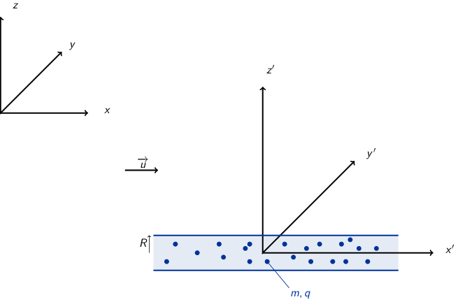
À \(t=t'=0\), \(R=R_0\), \(\dot{R}=\dot{R}'=0\) et \(\dot{\theta}=0\)
- dans \(\mathcal{R}'\), \(\rho_0=\) constante
- Champ électrique \(\vv{E}'(M)\)
Les plans \((\vv{u}_r,\vv{u}_\theta)\) et \((\vv{u}_r,\vv{u}_{x'})\) sont des plans de symétrie de la distribution de charge → le champ électrique appartient donc à chacun des plans : \(\vv{E}'(M)=E(M)\vv{u}_r\). De plus, il y a invariance par translation selon l'axe \(x'\) et par rotation d'angle θ : \(\vv{E}'(M)=E(r)\vv{u}_r\).
Théorème de Gauss :
\begin{equation*} \varoiint_\mathcal{S}\vv{E}'(M)\cdot d\vv{S}=\frac{Q_\text{int.}}{\epsilon_0} \end{equation*}où la surface de Gauss est un cylindre de rayon \(r
Au voisinage de \(r\sim R\), la force subie par une particule de charge \(q\) devient
\begin{equation*} \vv{F}'=q\vv{E}'(R)=\frac{q\rho_0}{2\epsilon_0}\vv{R} \end{equation*}soit une force répulsive.
- Mécanique classique ou Newtonienne \(\Upsigma\vv{F}=m\vv{a}\) 1
\begin{align*}
\vv{F}'&=m\vv{a}=m\ddot{R}\vv{u}_r=m\frac{d^2R}{dt^{\prime2}}\vv{u}_r\\
\frac{q\rho_0}{2\epsilon_0}R\vv{u}_r&=m\ddot{R}\vv{u}_r\rightarrow\ddot{R}-\frac{q\rho_0}{2m\epsilon_0}R=0
\end{align*}
Solutions du type \(R(t')=Ae^{\alpha t'}+Be^{-\alpha t'}\) où \(\alpha^2=\tfrac{q\rho_0}{2m\epsilon_0}\). Or à \(t'=0\), \(R=R_0\) et \(\dot{R}=0\) d'où \(A\alpha-B\alpha=0\rightarrow A=B\) et \(A+B=R_0\rightarrow A=\tfrac{R_0}{2}\). La solution de l'équation différentielle est ainsi
\begin{equation*} R(t')=\frac{R_0}{2}e^{\alpha t'}+\frac{R_0}{2}e^{-\alpha t'}=R_0\cosh\alpha t' \end{equation*}On suppose que le mouvement transverse i.e. \(R(t')\) est lent soit \(\alpha t'\ll1\). Le cosinus hyperbolique se réduit ainsi à \(\cosh\alpha t'\simeq1+\tfrac{(\alpha t')^2}{2}\). On déduit ainsi la variation relative de \(R\)
\begin{align*} \frac{\Delta R}{R_0}=\frac{R-R_0}{R_0}=\frac{R}{R_0}-1\simeq1+\frac{(\alpha t')^2}{2}-1&=\frac{\alpha^2}{2}t^{\prime2}\\ &=\frac{q\rho_0}{4\epsilon_0m}t^{\prime2} \end{align*} - Dilatation du temps i.e. \(t=\gamma t'\) et \(x=ut\) soit \begin{align*} \frac{\Delta R}{R_0}=\frac{q\rho_0}{4\epsilon_0m}\frac{t^2}{\gamma^2}&=\frac{q\rho_0}{4\epsilon_0m}\times\frac{x^2}{\gamma^2u^2}\times\frac{c^2}{c^2}\\ &=\frac{q\rho_0}{4\epsilon_0mc^2}\times\frac{x^2}{\gamma^2\beta^2}\text{ or }\gamma^2=\tfrac{1}{1-\beta^2},\gamma^2\beta^2=\gamma^2-1\\ &=\frac{q\rho_0}{4\epsilon_0mc^2}\times\frac{x^2}{\gamma^2-1} \end{align*}
- Champ électrique \(\vv{E}'(M)\)
- Le champ électrique obéit aux mêmes règles d'invariance et de symétries que dans le référentiel \(\mathcal{R}'\) soit \(\vv{E}(M)=E(r)\vv{u}_r\). Concernant le champ magnétique \(\vv{B}(M)\), la densité de courant \(\vv{j}=\rho\vv{u}\) est colinéaire à \(\vv{u}_x\) et donc le plan \((\vv{u}_r,\vv{u}_x)\) est un plan de symétrie de la distribution de courant → le champ magnétique est donc normal à ce plan soit \(\vv{B}(M)=B(M)\vv{u}_\theta\). Par ailleurs, les mêmes règles d'invariance s'appliquent au champ magnétique : \(\vv{B}(M)=B(r)\vv{u}_\theta\).
- Le calcul des champs électrique et magnétique se fait via respectivement
le théorème de Gauss et le théorème d'Ampère. Le champ électrique est
ainsi
\begin{equation*}
\vv{E}(M)=\frac{\rho}{2\epsilon_0}\vv{r}
\end{equation*}
Le théorème d'Ampère :
\begin{equation*} \oint_{\mathcal{C}}\vv{B}.d\vv{\ell}=\iint_\mathcal{S}\mu_0\vv{j}.d\vv{S}\text{ avec} \vv{j}=\rho u\vv{u}_x \end{equation*}Le contour \(\mathcal{C}\) est donc une boucle de rayon \(r\) orientée suivant \(\vv{u}_\theta\), la surface \(\mathcal{S}\) reposant sur ce contour étant égale à \(\pi r^2\). Soit un champ magnétique \(\vv{B}(M)\)
\begin{align*} B(r)\times2\pi r&=\mu_0\rho u\times\pi r^2\\ \vv{B}(M)&=\frac{\mu_0}{2}\rho ur\vv{u}_\theta \end{align*} - \begin{align*}
\vv{F}(r=R)&=q\vv{E}(R)+q\vv{u}\times\vv{B}(R)\\
&=\frac{q\rho}{2\epsilon_0}\vv{R}+\frac{q\mu_0\rho u^2R}{2}\vv{u_x}\times\vv{u}_\theta\\
&=\frac{q\rho}{2\epsilon_0}R\vv{u}_r-\frac{q\mu_0\rho u^2R}{2}R\vv{u}_r\text{ soit avec } \mu_0\epsilon_0c^2=1\\
&=\frac{q\rho}{2\epsilon_0}\vv{R}\left(1-\frac{u^2}{c^2}\right)\\
&=\frac{q\rho}{2\epsilon_0\gamma^2}\vv{R}
\end{align*}
La relation \(\vv{F}'=\gamma\vv{F}\) implique
\begin{equation*} \frac{q\rho_0}{2\epsilon_0}\vv{R}=\frac{q\rho}{2\epsilon_0\gamma^2}\vv{R} \end{equation*}soit
\begin{equation*} \rho=\gamma\rho_0 \end{equation*} - Le principe fondamental de la dynamique en relativité
\begin{align*}
\frac{d}{dt}\left(\gamma m\vv{u}\right)&=\Upsigma\vv{F}\\
\gamma m\frac{d\vv{u}}{dt}+m\vv{u}\frac{d\gamma}{dt}&=\vv{F}
\end{align*}
or \(\vv{F}\parallel\vv{u}_r\) impliquant que le second terme \(m\vv{u}\tfrac{d\gamma}{dt}\) soit nul. Soit
\begin{align*} \gamma m\frac{d\vv{u}}{dt}&=\vv{F}\\ \gamma m\ddot{R}&=\frac{q\rho}{2\epsilon_0\gamma^2}R\\ \ddot{R}-\frac{q\rho}{2\epsilon_0m}\frac{R}{\gamma^3}&=0 \end{align*}La solution de cette équation différentielle s'écrit \(R(t)=R_0\cosh\zeta t\) où \(\zeta^2=\frac{q\rho}{2\epsilon_0m\gamma^3}\).
La variation relative de rayon \(\Delta R/R_0\) devient
\begin{align*} \frac{\Delta R}{R_0}\simeq\frac{\zeta^2}{2}t^2&=\frac{q\rho}{4\epsilon_0m}\frac{1}{\gamma^3}t^2\\ &=\frac{q\gamma\rho_0}{4\epsilon_0m}\frac{1}{\gamma^3}t^2=\frac{q\gamma\rho_0}{4\epsilon_0m}\frac{1}{\gamma^3}\frac{x^2}{u^2}\\ &=\frac{q\rho_0}{4\epsilon_0m}\frac{x^2}{\gamma^2-1}=\left.\frac{\Delta R}{R_0}\right|_{\mathcal{R}'} \end{align*} - L'énergie cinétique \(T\) du faisceau d'électron est égale à
\(T=F.d=eE.d=eV/d.d=eV\) soit la tension accélératrice. Ainsi, une tension
accélératrice de \(V=\unit[0.1]{MV}\) fournit une énergie cinétique de
\(T=\unit[0.1]{MeV}\). Le facteur de Lorentz \(\gamma\) est égale à
\(1+\tfrac{T}{mc^2}\) où \(mc^2=\unit[0.511]{MeV}\). Finalement, l'intensité
électrique du faisceau \(I\) est égale au flux de la densité de courant \(j\)
soit \(I=j.S=\rho u.S\simeq\rho u\pi R_0^2\). La variation de la dimension
transerve devient
\begin{equation*}
\frac{\Delta R}{R_0}=\frac{e}{4\pi\epsilon_0mc^2}\times\frac{I}{c}\times\frac{L^2}{R_0^2}\times\frac{1}{(\gamma^2-1)^{3/2}}
\end{equation*}
Applications numériques :
\(V=\unit[0.1]{MV}\), \(\gamma=1.2\) → \(\frac{\Delta R}{R_0}=0.5=50\%\)
\(V=\unit[10]{MV}\),\(\gamma=21\) → \(\frac{\Delta R}{R_0}=1.5\,10^{-5}\)
1.7 Variations relatives de vitesse, de quantité de mouvement et d'énergie
On considère une particule de masse \(m\), de quantité de mouvement \(p\), d'énergie totale \(\mathcal{E}\) et d'énergie cinétique \(\mathcal{E}_c\).
- Exprimer \(dv/v\) et \(dp/p\) en fonction de \(d\mathcal{E}/\mathcal{E}\).
Soit l'énergie totale \(\mathcal{E}=\gamma\,mc^2\) et \(\gamma=\frac{1}{\surd1-v^2/c^2}\). On a
\begin{align*} \frac{d\mathcal{E}}{\mathcal{E}}&=\frac{d\gamma}{\gamma}\\ \text{avec }&d\gamma=-\frac{1}{2}\times\frac{1}{\left(1-v^2/c^2\right)^{3/2}}\times(-)2\frac{v}{c}dv\\ &d\gamma=\gamma^3\frac{v}{c}dv\\ \frac{d\mathcal{E}}{\mathcal{E}}&=\gamma^2\,\frac{v^2}{c^2}\times\frac{dv}{v}\\ &=\left(\gamma^2-1\right)\frac{dv}{v} \end{align*}soit
\begin{align*} \frac{dv}{v}=\frac{1}{\gamma^2-1}\,\frac{d\mathcal{E}}{\mathcal{E}} \end{align*}La quantité de mouvement \(p=\gamma\,mv\) est liée à l'énergie totale à travers l'expression \(\mathcal{E}^2=p^2c^2+m^2c^4\) soit en différentiant
\begin{align*} 2\mathcal{E}d\mathcal{E}&=2p\,dpc^2\\ \frac{dp}{p}&=\frac{\mathcal{E}d\mathcal{E}}{p^2c^2}\\ &=\frac{\mathcal{E}d\mathcal{E}}{\mathcal{E}^2-m^2c^4}\\ &=\frac{\gamma^2\,\cancel{m^2c^4}}{\gamma^2\,\cancel{m^2c^4}-\cancel{m^2c^4}}\,\frac{d\mathcal{E}}{\mathcal{E}}\\ &=\frac{\gamma^2}{\gamma^2-1}\,\frac{d\mathcal{E}}{\mathcal{E}} \end{align*} - Que se passe-t-il à la limite ultrarelativiste ?
\(v\to c\) et \(\gamma\gg1\) d'où
\begin{align*} \frac{dv}{v}&\simeq\frac{1}{\gamma^2}\,\frac{d\mathcal{E}}{\mathcal{E}}\\ \frac{dp}{p}&\simeq\frac{d\mathcal{E}}{\mathcal{E}} \end{align*} - On définit le facteur \(\alpha\) par
\begin{align*}
\frac{d\mathcal{E}_c}{\mathcal{E}_c}=\alpha\,\frac{dp}{p}
\end{align*}
Quelle est l'expression de \(\alpha\) en fonction de \(\beta\) ? Faire une représentation graphique.
L'énergie totale \(\mathcal{E}\) est égale à \(\mathcal{E}_c+mc^2\) d'où \(d\mathcal{E}=d\mathcal{E}_c\). On a ainsi
\begin{align*} \frac{dp}{p}&=\frac{\gamma^2}{\gamma^2-1}\times\frac{d\mathcal{E}_c}{\mathcal{E}}\times\frac{\mathcal{E}_c}{\mathcal{E}_c}\\ \frac{d\mathcal{E}_c}{\mathcal{E}_c}&=\underbrace{\frac{\gamma^2-1}{\gamma^2}\times\frac{\mathcal{E}}{\mathcal{E}_c}}_{\alpha}\times\frac{dp}{p}\\ \alpha&=\frac{\gamma^2-1}{\gamma^2}\times\frac{\gamma\,\cancel{mc^2}}{\gamma\,\cancel{mc^2}-\cancel{mc^2}}\\ &=\frac{\cancel{(\gamma-1)}(\gamma+1)}{\gamma^{\cancel{2}}}\times\frac{\cancel{\gamma}}{\cancel{\gamma-1}}\\ &=\frac{\gamma+1}{\gamma}=1+\frac{1}{\gamma}=1+\sqrt{1-\beta^2} \end{align*}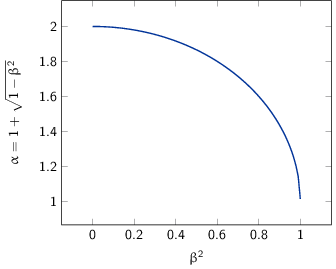
Figure 1: Variation du paramètre \(\alpha\) en fonction de la vitesse \(\beta\)
2 TD2 : Équations de Maxwell dans le vide et champ électromagnétique
2.1 "Propriétés mécaniques" du champ électromagnétique
- Énergie
- Force de Lorentz : \(\vv{F}=q\vv{E}+q\vv{v}\times\vv{B}\)
Équations de Maxwell :
Maxwell-Gauss \(\div\vv{E}=\vv{\nabla}.\vv{E}=\tfrac{\rho}{\epsilon_0}\) Conservation du flux magnétique \(\div\vv{B}=\vv{\nabla}.\vv{B}=0\) Maxwell-Faraday \(\rot\vv{E}=-\tfrac{\partial\vv{B}}{\partial t}\) Maxwell-Ampère \(\rot\vv{B}=\mu_0\vv{j}+\mu_0\epsilon_0\tfrac{\partial\vv{E}}{\partial t}\) - Équation locale de conservation de la charge
\begin{align*}
\div\left(\rot\vv{B}\right)=\vv{\nabla}.\left(\vv{\nabla}\times\vv{B}\right)&=0\\
\mu_0\div\vv{j}+\mu_0\epsilon_0\frac{\partial}{\partial t}\div\vv{E}&=0\\
\div\vv{j}+\frac{\partial\rho}{\partial t}=0
\end{align*}
Remarques :
- En régime stationnaire, \(\div\vv{j}=0\) i.e. champ à flux conservatif, on retrouve la loi des n\oe uds de Kirchhoff à savoir que l'intensité du courant \(i_1=i_2+i_3\)
- Dans le conducteur, la densité de courant \(\vv{j}\) s'exprime en fonction
du champ \(\vv{E}\) et de la conductivité \(\gamma\) (exprimée en Siemens
par mètre) : \(\vv{j}=\gamma\vv{E}\) d'où
\begin{align*}
\frac{\partial\rho}{\partial t}+\frac{\gamma}{\epsilon_0}\rho=0\text{ et }\rho(t)=\rho_0\,e^{-t/\tau}\text{ où }\tau=\frac{\epsilon_0}{\gamma}\sim\frac{10^{-11}}{10^7}\sim\unit[10^{-18}]{s}
\end{align*}
Dans un conducteur, il n'y a donc pas de charge en volume : le courant et donc les charges se déplaçent en surface.
- La puissance \(\mathcal{P}\) s'écrit comme le produit de la force \(\vv{F}\) par la
vitesse de la particule \(\vv{v}\) :
\begin{equation*}
\mathcal{P}=\vv{F}.\vv{v}=q\vv{E}.\vv{v}+q(\vv{v}\times\vv{B}).\vv{v}=q\vv{E}.\vv{v}
\end{equation*}
La puissance par unité de volume \(\tfrac{d\mathcal{P}}{d\tau}=nq\vv{E}.\vv{v}\) or \(\vv{j}=nq\vv{v}\) d'où \(\tfrac{d\mathcal{P}}{d\tau}=\vv{j}.\vv{E}\)
- \(\vv{R}=\tfrac{\vv{E}\times\vv{B}}{\mu_0}\) et \(u=\tfrac{\epsilon_0E^2}{2}+\tfrac{B^2}{2\mu_0}\) \begin{align*} \div\vv{R}&=\frac{1}{\mu_0}\div\left(\vv{E}\times\vv{B}\right)\text{ avec }\div\left(\vv{a}\times\vv{b}\right)=\vv{b}.\rot\vv{a}-\vv{a}.\rot\vv{b}\\ &=\frac{1}{\mu_0}\left(\vv{B}.\rot\vv{E}-\vv{E}.\rot\vv{B}\right)\\ &=\frac{1}{\mu_0}\left(-\vv{B}.\frac{\partial\vv{B}}{\partial t}-\vv{E}.\left(\mu_0\vv{j}+\mu_0\epsilon_0\frac{\partial\vv{E}}{\partial t}\right)\right)\\ &=\frac{1}{\mu_0}\left(-\frac{1}{2}\frac{\partial B^2}{\partial t}-\frac{\mu_0\epsilon_0}{2}\frac{\partial E^2}{\partial t}-\mu_0\vv{j}.\vv{E}\right)\\ &=-\frac{\partial u}{\partial t}-\vv{j}.\vv{E} \end{align*} \begin{align*} \div\vv{R}+\frac{\partial u}{\partial t}+\vv{j}.\vv{E}=0 \end{align*}
- \(\vv{E}=\vv{E}_0\cos\omega t\), \(\vv{B}=\vv{B_0}\sin\omega t\)
\begin{align*}
\iiint_V\div\vv{R}d\tau+\iiint_V\frac{\partial u}{\partial t}d\tau+\iiint_V\vv{j}.\vv{E}d\tau=0\\
\iiint_V\div\vv{R}d\tau+\iiint_V\frac{\partial u}{\partial t}d\tau+\underbrace{\iiint_V\frac{d\mathcal{P}}{d\tau}d\tau}_{\mathcal{P}_{\text{EM}\rightarrow\,q}}=0\\
\end{align*}
En appliquant le théorème d'Ostrogradsky \(\varoiint_S\vv{a}.d\vv{S}=\iiint_V\div\vv{a}d\tau\), on obtient
\begin{align*} \varoiint_S\vv{R}.d\vv{S}+\iiint_V\frac{\partial u}{\partial t}d\tau+\mathcal{P}_{\text{EM}\rightarrow\,q}=0 \end{align*}La puissance moyenne sortant de la surface fermée2 devient
\begin{align*} \left\langle\varoiint_S\vv{R}.d\vv{S}\right\rangle_T+\left\langle\iiint_V\frac{\partial u}{\partial t}d\tau\right\rangle_T+\left\langle\mathcal{P}_{\text{EM}\rightarrow\,q}\right\rangle_T=0\\ \left\langle\mathcal{P}_\text{sortant}\right\rangle_T+\iiint_V\left\langle\frac{\partial u}{\partial t}d\tau\right\rangle_T+\left\langle\mathcal{P}_{\text{EM}\rightarrow\,q}\right\rangle_T=0 \end{align*}Or
\begin{align*} \frac{\partial u}{\partial t}&=\frac{\epsilon_0E_0^2}{2}\times2\cos\omega t\sin\omega t+\frac{B_0^2}{2\mu_0}\times2\cos\omega t\sin\omega t\\ \left\langle\frac{\partial u}{\partial t}\right\rangle_T&=\epsilon_0E_0^2\left\langle\sin2\omega t\right\rangle_T+\frac{1}{\mu_0}B_0^2\left\langle\sin2\omega t\right\rangle_T\\ \left\langle\frac{\partial u}{\partial t}\right\rangle_T&=0 \end{align*}soit
\begin{align*} \left\langle\mathcal{P}_\text{sortant}\right\rangle_T+\left\langle\mathcal{P}_{\text{EM}\rightarrow\,q}\right\rangle_T=0\\ \left\langle\mathcal{P}_\text{entrant}\right\rangle_T=\left\langle\mathcal{P}_{\text{EM}\rightarrow\,q}\right\rangle_T \end{align*}
- Force de Lorentz : \(\vv{F}=q\vv{E}+q\vv{v}\times\vv{B}\)
- Impulsion

Onde plane progressive \(\vv{B}=\tfrac{\vv{u}_z\times\vv{E}}{c}\)
- Calcul de la puissance \(\mathcal{P}\) \begin{align*} \mathcal{P}&=\frac{dW}{dt}\text{ avec }\mathcal{P}=q\vv{E}.\vv{v}\\ W&=\int_0^Tq\vv{E}.\vv{v}dt \end{align*}
- La variation d'impulsion \(\vv{p}\) par unité de temps induite par le
passage de l'onde EM est égale à la force de Lorentz \(\vv{F}\)
\begin{align*}
\frac{d\vv{p}}{dt}=\vv{F}
\end{align*}
d'où
\begin{align*} \vv{p}&=\int_0^T\vv{F}dt=\int_0^Tq\left(\vv{E}+\vv{v}\times\vv{B}\right)dt\\ &=\int_0^Tq\vv{E}dt+\int_0^Tq\vv{v}\times\left(\frac{\vv{u}_z\times\vv{E}}{c}\right)dt \end{align*}La première intégrale est nulle car \(\vv{E}=\vv{E}_0\cos\omega t\). Pour déterminer l'expression de la seconde intégrale, on utilise la formule ci-dessous
\begin{align*} \vv{a}\times\left(\vv{b}\times\vv{c}\right)=\left(\vv{a}.\vv{c}\right)\vv{b}-\left(\vv{a}.\vv{b}\right)\vv{c} \end{align*}L'impulsion \(\vv{p}\) devient
\begin{align*} \vv{p}&=\int_0^T\frac{q}{c}\left(\vv{v}.\vv{E}\right)\vv{u}_z\,dt-\int_0^T\frac{q}{c}\left(\vv{v}.\vv{u}_z\right)\vv{E}dt \end{align*}or \(\vv{v}.\vv{u}_z=0\) car la particule est maintenue dans le plan \(z=0\). L'expression de l'impulsion se réduit donc
\begin{align*} \vv{p}=\int_0^T\frac{q}{c}\left(\vv{v}.\vv{E}\right)\vv{u}_z\,dt=\frac{W}{c}\vv{u}_z \end{align*} - L'énergie d'un photon \(E=h\nu=\tfrac{hc}{\lambda}\) est égale à \(pc\) via la relation de de Broglie reliant onde et matière \(\lambda=\tfrac{h}{p}\)
- Moment cinétique \(\vv{\sigma}_O=\vv{r}\times\vv{p}=\vv{OM}\times\vv{p}\) et
\(\sigma_z=\vv{\sigma}_O.\vv{u}_z\)
- \([\sigma_z]=[L]\times[M][L][T^{-1}]=[M]\times[L^2]\times[T^{-1}]\) et \([W]=[M][L^2][T^{-2}]\) d'où \begin{align*} [W]&=\frac{[\sigma_z]}{[T]}\\ W&=k\frac{\sigma_z}{T} \end{align*}
- \(\vv{p}=\tfrac{W}{c}\vv{u}_z\) \begin{align*} \vv{\sigma}_O&=\vv{OM}\times\vv{p}=\vv{OM}\times\frac{W}{c}\vv{u}_z\\ \vv{\sigma}_A&=\vv{AM}\times\vv{p}=\underbrace{\vv{AO}}_{\parallel\vv{u}_z}\times\frac{W}{c}\vv{u}_z+\vv{OM}\times\frac{W}{c}\vv{u}_z\\ &=\vv{\sigma}_O=\vv{\sigma} \end{align*}
- Expression de \(\sigma_z\) 3
\begin{align*}
\vv{\sigma}&=\vv{OM}\times\vv{p}\text{ or }\frac{d\vv{p}}{dt}=\vv{F}_\text{Lorentz}=q\vv{E}+q\vv{v}\times\vv{B}\\
d\vv{\sigma}&=\vv{OM}\times d\vv{p}\\
d\sigma_z&=d\vv{\sigma}.\vv{u}_z\\
\sigma_z&=\left[\underbrace{\int_0^T\vv{OM}\times q\vv{E}dt}_{\text{\(\unicode{x2460}\)}}+\underbrace{\int_0^T\vv{OM}\times q(\vv{v}\times\vv{B})dt}_{\text{\(\unicode{x2461}\)}}\right].\vv{u}_z
\end{align*}
Calcul de \(\unicode{x2460}\)
\begin{align*} \text{\(\unicode{x2460}\)}&=q\int_0^T\left(\vv{OM}\times\vv{E}\right).\vv{u}_z\,dt\\ &=q\int_0^T\left(\vv{E}\times\vv{u}_z\right).\vv{OM}\,dt\\ &=-q\int_0^T\vv{OM}.\left(\vv{u}_z\times\vv{E}(M,t)\right)\,dt \end{align*}or \(\vv{E}(M,t)=\vv{E}(O,t)\) car l'onde EM est plane et le calcul se fait en \(z=0\)
Calcul de \(\unicode{x2461}\)
\begin{align*} \text{\(\unicode{x2461}\)}&=q\int_0^T\vv{OM}\times\left(\vv{v}\times\vv{B}\right).\vv{u}_zdt \end{align*}or
\begin{align*} \vv{a}\times\left(\vv{b}\times\vv{c}\right)=\left(\vv{a}.\vv{c}\right).\vv{b}-\left(\vv{a}.\vv{b}\right).\vv{c} \end{align*} \begin{align*} \text{\(\unicode{x2461}\)}&=q\left[\int_0^T\left(\vv{OM}.\vv{B}\right).\underbrace{\vv{v}.\vv{u}_z}_{\vv{v}\perp\vv{u}_z=0}dt-\int_0^T\left(\vv{OM}.\vv{v}\right).\underbrace{\vv{B}.\vv{u}_z}_{\vv{B}\perp\vv{u}_z=0}dt\right] \end{align*}Seul le champ électrique \(\vv{E}\) de l'onde EM contribue au moment cinétique cédé à la particule \(q\)
\begin{align*} \sigma_z=-q\int_0^T\vv{OM}.\left(\vv{u}_z\times\vv{E}(O,t)\right)dt \end{align*} - Polarisation circulaire gauche
\begin{align*}
\vv{E}(O,t)=
\begin{pmatrix}
E_0\cos\omega t\\E_0\sin\omega t\\0
\end{pmatrix}
\end{align*}
\begin{align*}
\frac{d\vv{E}(O,t)}{dt}=
\begin{pmatrix}
-E_0\omega\sin\omega t\\E_0\omega\cos\omega t\\0
\end{pmatrix}
\end{align*}
\begin{align*}
\vv{u}_z\times\vv{E}(O,t)=
\begin{pmatrix}
0\\0\\1
\end{pmatrix}
\times
\begin{pmatrix}
E_0\cos\omega t\\E_0\sin\omega t\\0
\end{pmatrix}
=
\begin{pmatrix}
-E_0\sin\omega t\\E_0\cos\omega t\\0
\end{pmatrix}
=\frac{1}{\omega}\,\frac{d\vv{E}(O,t)}{dt}
\end{align*}
d'où
\begin{align*} \sigma_z=-\frac{q}{\omega}\int_0^T\vv{OM}.\frac{d\vv{E}(O,t)}{dt}dt \end{align*}En intégrant par partie i.e. \((uv)'=u' v+v' u\rightarrow\int u' v=[uv]-\int v' u\)
\begin{align*} \sigma_z&=-\frac{q}{\omega}\left[\underbrace{\left[\vv{OM}.\vv{E}\right]_0^T}_{\vv{E}(O,0)=\vv{E}(O,T)}-\int_0^T\frac{d\vv{OM}}{dt}.\vv{E}(O,t)dt\right]\\ &=\frac{q}{\omega}\int_0^T\vv{v}.\vv{E}(O,t)\,dt=\frac{W}{\omega} \end{align*}\(\omega=\tfrac{2\pi}{T}\) d'où \(W=2\pi\frac{\sigma_z}{T}=\hbar\omega\) soit \(\sigma_z=+\hbar\). Sur une période \(T\), le champ EM cède à la particule \(q\), un moment cinétique égal à \(+\hbar\)
- Le moment cinétique de photons polarisé circulairement droite est alors \(-\hbar\), et \(\sigma_z=0\) pour une polarisation rectiligne (rectiligne ≡ circulaire droite + circulaire gauche)
2.2 Interprétation corpusculaire de la pression de radiation

- Onde plane monochromatique :
\(\vv{B}=\frac{\vv{k}\times\vv{E}}{\omega}=\frac{\vv{u_k}\times\vv{E}}{c}=\frac{E}{c}\vv{u}_B\). La
densité volumique d'énergie électromagnétique \(u\) est égale à
\begin{align*}
u&=\frac{\epsilon_0E^2}{2}+\frac{B^2}{2\mu_0}\\
u&=\frac{\epsilon_0E^2}{2}+\frac{E^2}{2\mu_0c^2}\\
u&=\epsilon_0E^2\\
\left\langle u\right\rangle_T&=\left\langle\epsilon_0E_0^2\cos^2\left(\vv{k}.\vv{r}-\omega t\right)\right\rangle_T\\
\left\langle u\right\rangle_T&=\frac{\epsilon_0E_0^2}{2}
\end{align*}
L'intensité \(I\) est par définition la puissance moyenne par unité de surface \(S\) 4
\begin{align*} I&=\frac{P_W}{S}=\frac{dE}{Sdt}\text{ où }\\ dE&=\langle u\rangle\times S\times c\times dt\\ I&=\frac{\langle u\rangle\times Scdt}{Sdt}=\langle u\rangle\times c \end{align*} - Calcul de la densité \(N\) de photons dans le faisceau \begin{align*} \langle u\rangle&=N\times E=N\times \frac{hc}{\lambda}\\ \frac{I}{c}&=N\times \frac{hc}{\lambda}\\ N&=\frac{I\lambda}{hc^2}=\frac{9\,10^4\times5.15\,10^{-7}}{6.62\,10^{-34}\times(3\,10^8)^2}=\unit[7.8\,10^{14}]{photons/m^3} \end{align*}
- Choc élastique \(E_1=E_2\) d'où \(p_1c=p_2c\rightarrow p_1=p_2=p\). La conservation de l'impulsion \begin{align*} \vv{p}_1&=\vv{p}_2+\Updelta\vv{p}_0\\ \Updelta\vv{p_0}&=\vv{p}_1 - \vv{p}_2=2p\cos\theta\vv{u}_z\\ \|\Updelta\vv{p}_0\|&=\frac{2h}{\lambda}\cos\theta=\frac{2\times6.62\,10^{-34}}{5.15\,10^{-7}}\frac{\sqrt3}{2}=\unit[2.08\,10^{-27}]{kg.m.s^{-1}} \end{align*}
- \begin{align*} x&=\frac{N\times V_\text{cylindre}}{S_\text{projetée}\times dt}\text{ où }S_\text{projetée}=S_\text{cylindre}/\cos\theta\\ &=\frac{N\times S_\text{cylindre}\times\cos\theta cdt}{S_\text{cylindre}\times dt}\\ &=Nc\cos\theta=\frac{I\lambda}{hc}\cos\theta\\ &=\frac{9\,10^4\times5.15\,10^{-7}}{6.62\,10^{-34}\times3\,10^8}\cos 30=\unit[2\,10^{23}]{photon.m^{-2}.s^{-1}} \end{align*}
- \begin{align*}
P&=\frac{d\vv{p}}{Sdt}=x\cdot\Updelta p_0\\
&=\frac{I\lambda}{hc}\cos\theta\times\frac{2h}{\lambda}\cos\theta\\
&=\frac{2I\cos^2\theta}{c}=\frac{2\times9\,10^4\times\cos^230}{3\,10^8}=\unit[4.5\,10^{-4}]{N/m^2}\\
&\text{ avec }I=\frac{\epsilon_0E_0^2c}{2}, P=\epsilon_0E_0^2\cos^2\theta
\end{align*}
Application expérimentale: La pression de radiation aussi faible soit elle, est un bruit important pour les interféromètres de haute sensibilité tels que Virgo (cf. http://tel.archives-ouvertes.fr/tel-00175254/en/).
3 TD3 : Électrostatique dans le vide
3.1 Condensateur cylindrique
En considérant \(h\gg a,b\), le problème est invariant par translation le long de l'axe des cylindres. Par ailleurs, le problème est invariant par rotation soit \(E(M)=E(r)\). En coordonnées cylindriques, les plans \((\vv{u}_r,\vv{u}_\theta)\) et \((\vv{u}_r,\vv{u}_z)\) sont des plans de symétrie de la distribution de charge. On déduit que le champ électrique s'écrit
\begin{align*} \vv{E}(M)=E(r)\vv{u}_r \end{align*}Le choix de la surface de Gauss est alors un cylindre de rayon \(r\) et de hauteur \(h\)
\begin{align*} \varoiint_S\vv{E}.\,d\vv{S}&=\iiint_V\frac{\rho}{\epsilon_0}d\tau=\frac{\Upsigma Q_\text{int.}}{\epsilon_0}\\ E(r)\times2\pi rh&=\frac{\Upsigma Q_\text{int.}}{\epsilon_0}\\ \vv{E}(M)&=\frac{\Upsigma Q_\text{int.}}{2\pi\epsilon_0}\times\frac{1}{rh}\vv{u}_r \end{align*}- pour \(r
- pour \(a
- pour \(r>b\), \(Q_\text{int.}=Q_a+Q_b=0\) d'où \(\vv{E}(r>b)=\vv{0}\)
- pour \(a
La capacité d'un condensateur \(C\) est égale au rapport de la charge dans le condensateur sur le potentiel électrique appliqué aux bornes du condensateur soit \(C=\tfrac{Q}{V}\). Par ailleurs, le champ électrique \(\vv{E}\) est égal au gradient du potentiel électrique \(\vv{E}=-\grad\,V=-\tfrac{dV}{dr}\vv{u}_r\). Soit
\begin{align*} -\frac{dV}{dr}&=\frac{Q_a}{2\pi\epsilon_0rh}\\ -\int_{V_a}^{V_b}dV&=\int_a^b\frac{Q_a}{2\pi\epsilon_0h}\frac{dr}{r}\\ -V_b+V_a&=\frac{Q_a}{2\pi\epsilon_0h}\ln\frac{b}{a}\\ V_a&=\frac{Q_a}{2\pi\epsilon_0h}\ln\frac{b}{a}=\frac{Q_a}{C}\\ C&=\frac{2\pi\epsilon_0h}{\ln\frac{b}{a}} \end{align*}Application numérique
\begin{align*} \frac{C}{h}=\frac{2\pi\epsilon_0}{\ln\frac{b}{a}}=\frac{2\pi\times8.85\,10^{-12}}{\ln8}=\unit[2.7\,10^{-11}]{F/m} \end{align*}3.2 Boule conductrice en présence d'une charge ponctuelle : méthode des images

- \(V(r=R)=0\)
- L'absence de charges libres dans le volume d'un conducteur (les charges
sont surfaciques cf. Exercice 2.1) implique que le champ
électrique \(\vv{E}_\text{int.}\) soit nul (théorème de Gauss). Le potentiel
électrique \(V_\text{int.}\) déduit de
\(\vv{E}_\text{int.}=-\grad\,V_\text{int}\) est par conséquent
constant. \(V_\text{int.}(r=R)\) étant par ailleurs nul
\begin{align*}
V_\text{int.}=V(r\leq R)=0
\end{align*}
Le problème est invariant par rotation autour de l'axe \(Oz\) et le plan \((\vv{u}_r,\vv{u}_z)\) est plan de symétrie de la distribution de charge. Le champ électrostatique \(\vv{E}\) exprimé dans le système de coordonnées cylindriques \(M=(r,\theta,z)\), a donc pour expression
\begin{align*} \vv{E}(M)=E_r(r,z)\vv{u}_r+E_z(r,z)\vv{u}_z \end{align*} - En raison de la symétrie du problème, une charge fictive \(q'\) est
nécessairement sur l'axe \(Oz\). Le potentiel alors généré en tout point \(M\)
de l'espace est la somme des potentiels induits par chaque particule soit
\begin{align*}
V(M)=\frac{1}{4\pi\epsilon_0}\left(\frac{q}{PM}+\frac{q'}{P' M}\right)
\end{align*}
où \(P'\) est la position de la charge \(q'\). Le potentiel pour \(r\to\infty\) est nul : \(V(\infty)=0\). La condition selon laquelle le potentiel est nul en tout point \(M\) de la surface de la sphère implique
\begin{align*} \frac{q}{PM}=-\frac{q'}{P' M} \end{align*}\(q'\) est donc de signe opposé à \(q\). Par suite, on déduit que
\begin{align*} q\,P' M &= -q'\,PM\\ q^2\,P' M^2 &=q^{\prime2}\,PM^2\\ q^2\,\vv{P' M}^2 &=q^{\prime2}\,\vv{PM}^2\\ q^2\,\left(\vv{P' O}+\vv{OM}\right)^2 &=q^{\prime2}\,\left(\vv{PO}+\vv{OM}\right)^2\\ \underbrace{q^2P' O^2-q^{\prime2}PO^2+q^2R^2-q^{\prime2}R^2}_{\text{\(\unicode{x2460}\)}}&=\underbrace{q^{\prime2}2\vv{PO}.\vv{OM}-q^22\vv{P' O}.\vv{OM}}_{\text{\(\unicode{x2461}\)}} \end{align*}Le premier membre de l'équation est indépendant de \(M\) et est donc constant. Le second membre dépend de \(M\) mais doit demeurer constant pour tout \(M\) appartenant à la surface de la sphère. Cette égalité est ainsi vérifiée pour \(M(r,\theta,z=0)\) soit \(\vv{OM}\perp\vv{u}_z\). On obtient \(\unicode{x2460}\)=\(\unicode{x2461}\)=0 et on déduit
\begin{align*} \text{\(\unicode{x2461}\)}=0&=2\vv{OM}.\left(q^{\prime2}\vv{PO}-q^2\vv{P' O}\right)\\ \vv{P' O}&=\frac{q^{\prime2}}{q^2}\vv{PO}\parallel\vv{u}_z \end{align*}À partir du premier membre \(\unicode{x2460}\), on déduit
\begin{align*} \text{\(\unicode{x2460}\)}=0&=q^2P' O^2-q^{\prime2}PO^2+q^2R^2-q^{\prime2}R^2\\ R^2\left(q^{\prime2}-q^2\right)&=q^2P' O^2-q^{\prime2}PO^2\\ &=q^2\times\frac{q^{\prime4}}{q^4}PO^2-q^{\prime2}PO^2\\ &=q^{\prime2}PO^2\left(\frac{q^{\prime2}}{q^2}-1\right)\\ R^2&=PO^2\times\left(\frac{q'}{q}\right)^2\\ q'&=-\frac{qR}{PO}\\ P' O&=\frac{R^2}{PO}\leq R \end{align*} - À partir de l'équation locale \(\div\vv{E}=\tfrac{\rho}{\epsilon_0}\) et de
l'expression du potentiel électrique \(\vv{E}=-\grad V\), on obtient
l'équation de Poisson
\begin{align*}
-\div\left(\grad V\right)&=\frac{\rho}{\epsilon_0}\\
-\Delta V&=\frac{\rho}{\epsilon_0}\\
\Delta V+\frac{\rho}{\epsilon_0}&=0
\end{align*}
Les conditions aux limites imposées par la boule sont que le potentiel électrique en tout point de la surface soit nul \(V(r=R)=0\). Pour tout point \(r>R\), le problème "charge \(q\) + boule conductrice" est équivalent à la situation "charge \(q\) + charge \(q'\)" du fait que les deux situations obéissent à la même équation de Poisson et satisfont aux mêmes conditions aux limites \(V(r=R)=0\). Le théorème d'unicité implique donc les mêmes solutions pour chacune des représentations. Cette équivalence n'est vrai que pour \(r>R\) car à l'intérieur de la boule le champ électrostatique demeure nul ce qui n'est pas le cas dans la situation "charge \(q\) + charge \(q'\)".


- Calcul du champ \(\vv{E}(r\geq R)\) : combinaison des champs coulombiens de
chacune des charges \(q\) et \(q'\)
\begin{align*}
\vv{E}(M)&=\frac{1}{4\pi\epsilon_0}\left(\frac{q}{PM^3}\vv{PM}+\frac{q'}{P' M^3}\vv{P' M}\right)\\
&=\frac{1}{4\pi\epsilon_0}\left[\left(\frac{q}{PM^3}+\frac{q'}{P' M^3}\right)\vv{OM}+\underbrace{\frac{q\vv{PO}}{PM^3}+\frac{q'\vv{P' O}}{P' M^3}}_{\text{\(\unicode{x2460}\)}}\right]
\end{align*}
Sachant que \(\vv{P' O}=\frac{q^{\prime2}}{q^2}\vv{PO}\) et \(P' M=-\frac{q'}{q}PM\), l'expression \(\unicode{x2460}\) devient
\begin{align*} \text{\(\unicode{x2460}\)}&=\frac{q\vv{PO}}{PM^3}+\frac{q'\vv{P' O}}{P' M^3}\\ &=\frac{q\vv{PO}}{PM^3}+\frac{q'\times q^{\prime2}}{q^2}\times\frac{\vv{PO}}{-q^{\prime3}}\times\frac{q^3}{PM^3}\\ &=0 \end{align*}soit pour \(M\in\) sphère
\begin{align*} \vv{E}(M)&=\frac{R\vv{u}_r}{4\pi\epsilon_0}\left(\frac{q}{PM^3}+\frac{q'}{P' M^3}\right)\\ &=\frac{q\vv{R}}{4\pi\epsilon_0\,PM^3}\times\left(1-\frac{q^2}{q^{\prime2}}\right)\\ &=\frac{q\vv{R}}{4\pi\epsilon_0\,PM^3}\times\left(1-\frac{PO^2}{R^2}\right) \end{align*}Conditions de continuité du champ électrique au passage d'une surface
\begin{align*} \vv{n}_{\tiny1\to2}.\left(\vv{E}_2-\vv{E}_1\right)&=\frac{\sigma}{\epsilon_0}\rightarrow\text{discontinuité de la composante normale}\\ \vv{n}_{\tiny1\to2}\times\left(\vv{E}_2-\vv{E}_1\right)&=\vv{0}\rightarrow\text{continuité de la composante tangentielle} \end{align*}
Étant donné que \(\vv{E}_\text{int.}=\vv{E}_1=\vv{0}\), la densité surfacique de charge est égale à
\begin{align*} \vv{E}(M\in\text{sphère})&=\frac{\sigma}{\epsilon_0}\vv{u}_r\\ \sigma&=\frac{qR}{4\pi}\left(1-\frac{PO^2}{R^2}\right)\times\frac{1}{PM^3} \end{align*}La charge totale \(Q_\text{tot.}\) de la boule conductrice est donc
\begin{align*} Q_\text{tot.}&=\int_0^{2\pi}d\phi\int_0^\pi d\theta\times R^2\sin\theta\times\sigma(\theta)\\ &=\frac{2\pi qR^3}{4\pi R^2}\left(R^2-PO^2\right)\times\int_0^\pi d\theta\frac{\sin\theta}{PM^3}\\ &\text{avec }PM^2=PO^2+OM^2+2\vv{PO}.\vv{OM}=PO^2+R^2-2R\,PO\cos\theta\\ Q_\text{tot.}&=\frac{qR(R^2-PO^2)}{2}\times\underbrace{\int_0^\pi\frac{\sin\theta d\theta}{\left(PO^2+R^2-2R\,PO\cos\theta\right)^{3/2}}}_{\text{\(\unicode{x2460}\)}} \end{align*}Pour calculer \(\unicode{x2460}\), on pose \(x=\cos\theta\) avec \(x\in[1,-1]\) et \(dx=-\sin\theta d\theta\)
\begin{align*} \text{\(\unicode{x2460}\)}&=\int_1^{-1}\frac{-dx}{\left(PO^2+R^2-2R\,POx\right)^{3/2}}\\ &\text{or }\int\frac{dx}{(b+ax)^{3/2}}=\frac{1}{(b+ax)^{1/2}}\times-\frac{2}{a}\\ \text{\(\unicode{x2460}\)}&=\frac{1}{R\,PO}\left(\frac{1}{\surd PO^2+R^2-2R\,PO}-\frac{1}{\surd PO^2+R^2+2R\,PO}\right)\\ &=\frac{1}{R\,PO}\left(\frac{1}{PO-R}-\frac{1}{PO+R}\right)\\ &=\frac{1}{R\,PO}\left(\frac{2R}{PO^2-R^2}\right) \end{align*}Finalement \(Q_\text{tot.}\) devient
\begin{align*} Q_\text{tot.}&=\frac{qR(R^2-PO^2)}{2}\times\frac{1}{R\,PO}\times\frac{2R}{PO^2-R^2}\\ &=-\frac{qR}{PO}=q' \end{align*}Le théorème de Gauss impose que \(Q_\text{tot.}\) soit égal à la somme des charges à l'intérieur de la sphère. La charge fictive \(q'\) est par construction à l'intérieur de la sphère d'où \(Q_\text{tot.}=q'\).
- Calcul de la force exercée par la charge \(q\) sur \(q'\) ≡ à calculer la force exercée par la charge \(q\) sur la boule conductrice. \begin{align*} \vv{F}_{q\to q'}&=\vv{F}_{q\to\text{boule}}\\ &=q'\vv{E}_{q\to q'}\\ &=\frac{q' q}{4\pi\epsilon_0}\times\frac{\vv{PP'}}{PP^{\prime3}}=\frac{q' q}{4\pi\epsilon_0}\times\frac{-\vv{u}_z}{PP^{\prime2}}\\ &\text{avec }PP^{\prime2}=PO^2+OP^{\prime2}=PO^2+\frac{R^4}{PO^2}=\frac{PO^4+R^4}{PO^2}\\ \vv{F}_{q\to\text{boule}}&=-\frac{qq'}{4\pi\epsilon_0}\times\frac{PO^2}{PO^4+R^4}\vv{u}_z\\ &=\frac{q^2}{4\pi\epsilon_0}\frac{R\,PO}{PO^4+R^4}\vv{u}_z \end{align*}
- L'absence de charges libres dans le volume d'un conducteur (les charges
sont surfaciques cf. Exercice 2.1) implique que le champ
électrique \(\vv{E}_\text{int.}\) soit nul (théorème de Gauss). Le potentiel
électrique \(V_\text{int.}\) déduit de
\(\vv{E}_\text{int.}=-\grad\,V_\text{int}\) est par conséquent
constant. \(V_\text{int.}(r=R)\) étant par ailleurs nul
\begin{align*}
V_\text{int.}=V(r\leq R)=0
\end{align*}
- \(V_0\neq0\)
- Le principe de superposition implique
\begin{align*}
V(M)=V_0=\frac{1}{4\pi\epsilon_0}\left(\underbrace{\frac{q}{PM}+\frac{q'}{P'M}}_{=0}+\frac{q''}{P''M}\right)
\end{align*}
soit
\begin{align*} q''=4\pi\epsilon_0V_0\times P''M=\text{constante} \end{align*}impliquant que \(P''\equiv O\) et donc \(q''=4\pi\epsilon_0RV_0\)
- Les charges fictives/virtuelles \(q'\) et \(q''\) sont à l'intérieur de la
boule conductrice d'où \(Q_\text{boule}=q'+q''=0\). La charge \(q''\) est
ainsi égale à \(-q'=\frac{qR}{PO}\) soit un potentiel \(V_0\) égal à
\begin{align*}
4\pi\epsilon_0RV_0&=-q'=\frac{qR}{PO}\\
V_0&=\frac{1}{4\pi\epsilon_0}\times\frac{q}{PO}
\end{align*}
i.e. le potentiel généré en \(O\) par la particule \(q\).
- Le principe de superposition implique
\begin{align*}
V(M)=V_0=\frac{1}{4\pi\epsilon_0}\left(\underbrace{\frac{q}{PM}+\frac{q'}{P'M}}_{=0}+\frac{q''}{P''M}\right)
\end{align*}
- Boule conductrice dans un champ électrostatique uniforme
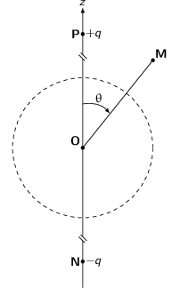
- Les champs électrostatiques créés par chaque charge se superposent en \(M\)
\begin{align*}
\vv{E}(M)&=\frac{1}{4\pi\epsilon_0}\left(\frac{q}{PM^3}\vv{PM}-\frac{q}{NM^3}\vv{NM}\right)\\
\text{avec }\vv{PM}&=\vv{PO}+\vv{OM}\\
PM^3&=\left(Z^2+r^2+2\vv{PO}.\vv{OM}\right)^{3/2}\\
PM^3&=Z^3\left(1-2\frac{r}{Z}\cos\theta+\frac{r^2}{Z^2}\right)^{3/2}
\end{align*}
Pour \(r\leq R\), l'expression de la longueur \(PM\) devient au premier ordre en \(\frac{r}{Z}\) (\(Z\gg R\))
\begin{align*} PM^3&\simeq Z^3\left(1-2\frac{r}{Z}\cos\theta\right)^{3/2}\\ \frac{1}{PM^3}&\simeq\frac{1}{Z^3}\left(1+3\frac{r}{Z}\cos\theta\right) \end{align*}De même
\begin{align*} \frac{1}{NM^3}&\simeq\frac{1}{Z^3}\left(1-3\frac{r}{Z}\cos\theta\right) \end{align*}Le champ électrique au voisinage de la boule conductrice devient
\begin{eqnarray*} \vv{E}(r\leq R)&=\frac{1}{4\pi\epsilon_0}\times\frac{q}{Z^3}\times&\left[\vv{OM}\left(\cancel{1}+3\frac{r}{Z}\cos\theta\right)-\vv{OM}\left(\cancel{1}-3\frac{r}{Z}\cos\theta\right)\right.\\ &&\left.+\vv{PO}\left(1+3\frac{r}{Z}\cos\theta\right)-\vv{NO}\left(1-3\frac{r}{Z}\cos\theta\right)\right]\\ &=\frac{1}{4\pi\epsilon_0}\times\frac{q}{Z^3}\times&\left[\cancel{6\frac{r^2}{Z}}(\propto\tfrac{r^2}{Z^2}\ll1)\cos\theta\vv{u}_r\right.\\ &&\left.+\vv{PO}\left(1+3\frac{r}{Z}\cos\theta\right)-\vv{NO}\left(1-3\frac{r}{Z}\cos\theta\right)\right]\\ &=\frac{1}{4\pi\epsilon_0}\times\frac{q}{Z^3}\times&\left[\vv{PO}\left(1+\cancel{3\frac{r}{Z}\cos\theta}\right)-\vv{NO}\left(1-\cancel{3\frac{r}{Z}\cos\theta}\right)\right]\\ &=\frac{1}{4\pi\epsilon_0}\times\frac{q}{Z^3}\vv{PN}\\ &=-\frac{1}{4\pi\epsilon_0}\times\frac{2q}{Z^2}\vv{u}_z&\rightarrow\text{champ électrique constant pour }r\leq R\\ \end{eqnarray*}Le champ ainsi généré correspond au champ électrique généré par un dipôle électrique \(\vv{p}=q\vv{PN}\) (où la charge \(q\) est en \(P\) et la charge \(-q\) est en \(N\), cf. Cours Chapitre 2, page 44).
- Nous avons établi à la question 1.d) qu'en présence d'une charge
ponctuelle \(q\), la densité surfacique de charge était
\begin{align*}
\sigma=\frac{q}{4\pi}\times\frac{R^2-PO^2}{R}\times\frac{1}{PM^3}
\end{align*}
où \(P\) est la position de la charge \(q\) et \(M\) est un point situé à la surface de la boule. On déduit ainsi que la charge \(+q\) génère une densité surfacique
\begin{align*} \sigma_+=\frac{q}{4\pi}\times\frac{R^2-PO^2}{R}\times\frac{1}{PM^3} \end{align*}tandis que la charge \(-q\) placée en \(N\) implique une densité surfacique
\begin{align*} \sigma_-=\frac{-q}{4\pi}\times\frac{R^2-NO^2}{R}\times\frac{1}{NM^3} \end{align*}En ne considérant toujours que le premier ordre en \(\frac{R}{Z}\), on obtient une densité surfacique totale
\begin{align*} \sigma_\text{totale}&=\sigma_++\sigma_-\\ &\simeq\frac{q\times(R^2-Z^2)}{4\pi R}\times\frac{1}{Z^3}\left(\cancel{1}+\frac{3R}{Z}\cos\theta-\cancel{1}+\frac{3R}{Z}\cos\theta\right)\\ &\text{avec } R^2-Z^2=Z^2(-1+\frac{R^2}{Z^2})\simeq-Z^2\\ &\simeq-\frac{3q}{2\pi Z^2}\cos\theta \end{align*}Le champ électrique au voisinage de la surface de la boule n'est plus uniforme du fait de la présence de charge en surface de cette boule.
- Le champ dipolaire électrique s'écrit
\begin{align*}
\vv{E}_\text{dipôle}&=-\frac{q}{2\pi\epsilon_0Z^2}\vv{u}_z\\
&=\frac{\sigma_0}{3\epsilon_0}\vv{u}_z\\
&\text{où }\sigma_\text{totale}=-\frac{3q}{2\pi Z^2}\cos\theta=\sigma_0\cos\theta
\end{align*}
Le champ électrique à l'intérieur de la boule conductrice demeurant nul, on déduit que le champ électrique \(\vv{E}_\sigma\) crée par la densité surfacique de charge \(\sigma_\text{totale}\) s'écrit
\begin{align*} \vv{E}_\text{int.}=\vv{0}&=\vv{E}_\text{dipôle}+\vv{E}_\sigma\\ \vv{E}_\sigma&=-\frac{\sigma_0}{3\epsilon_0}\vv{u}_z \end{align*} - La pression électrostatique \(P\) est égale à
\(\frac{\sigma^2}{2\epsilon_0}\). C'est par ailleurs, la force
électrostatique par unité de surface \(P=\frac{d\vv{F}}{d\vv{S}}\). La force
exercée sur l'hémisphère supérieur est ainsi
\begin{align*}
d\vv{F}_1&=\frac{\sigma^2}{2\epsilon_0}\,d\vv{S}\\
\vv{F}_1&=\int_0^{2\pi}d\phi\int_0^{\pi/2}d\theta\frac{\sigma_0^2}{2\epsilon_0}\cos^2\theta R^2\sin\theta\vv{u}_r
\end{align*}
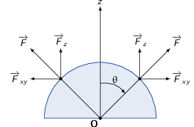
Seule la composante suivant \(\vv{u}_z\) de la force est non nulle soit en remplaçant \(\vv{u}_r=\vv{u}_z\cos\theta\), la force \(\vv{F}_1\) devient
\begin{align*} \vv{F}_1&=\int_0^{2\pi}d\phi\int_0^{\pi/2}d\theta\frac{\sigma_0^2}{2\epsilon_0}\cos^3\theta R^2\sin\theta\vv{u}_z \end{align*}En procédant au changement de variable \(x=\cos\theta\) avec \(x\in[1,0]\) et \(dx=-\sin\theta d\theta\)
\begin{align*} \vv{F}_1&=2\pi\frac{\sigma_0^2}{2\epsilon_0}R^2\int_0^1x^3dx\vv{u}_z\\ &=\frac{\pi R^2\,\sigma_0^2}{\epsilon_0}\times\frac{1}{4}\vv{u}_z\\ &=\frac{\pi R^2\,\sigma_0^2}{4\epsilon_0}\vv{u}_z=\frac{\pi R^2}{4\epsilon_0}\times\frac{9q^2}{4\pi^2Z^4}\vv{u}_z\\ \vv{F}_2&=-\vv{F}_1=-\frac{\pi R^2\,\sigma_0^2}{4\epsilon_0}\vv{u}_z \end{align*}
- Les champs électrostatiques créés par chaque charge se superposent en \(M\)
\begin{align*}
\vv{E}(M)&=\frac{1}{4\pi\epsilon_0}\left(\frac{q}{PM^3}\vv{PM}-\frac{q}{NM^3}\vv{NM}\right)\\
\text{avec }\vv{PM}&=\vv{PO}+\vv{OM}\\
PM^3&=\left(Z^2+r^2+2\vv{PO}.\vv{OM}\right)^{3/2}\\
PM^3&=Z^3\left(1-2\frac{r}{Z}\cos\theta+\frac{r^2}{Z^2}\right)^{3/2}
\end{align*}
3.3 Forces de Van der Waals
3.3.1 Modèle de l'électron élastiquement lié : moment dipolaire induit d'un atome

- La densité volumique de charge \(\rho\) du nuage électronique est égale à \begin{align*} \frac{4}{3}\pi\,a^3\times\rho&=-q\\ \rho=-\frac{3q}{4\pi\,a^3} \end{align*}
- Tout plan contenant le vecteur radial \(\vv{u}_r\) est plan de symétrie de la
distribution de charge au sein du nuage électronique : le champ électrique
\(\vv{E}_\text{int.}\) est donc colinéaire à \(\vv{u}_r\). Par ailleurs, le
problème est invariant par rotation d'angle θ et φ, le champ
électrique ne dépendant que de la distance au centre du nuage.
En choisissant comme surface de Gauss, une sphère centrée sur le centre du nuage et de rayon \(r\), on a
\begin{align*} \varoiint_\text{sphère}\vv{E}_\text{int.}.\vv{dS}&=\iiint_\text{volume int.}\frac{\rho}{\epsilon_0}\,d\tau\\ 4\pi\,r^2\,\vv{E}_\text{int.}(r)&=\iiint_\text{volume int.}\frac{\rho}{\epsilon_0}\,d\tau \end{align*}- pour \(r>a\), \begin{align*} \vv{E}_\text{int.}=-\frac{q}{4\pi\epsilon_0\,r^2}\vv{u}_r \end{align*}
- pour \(r
En l'absence de champ externe, la force exercée par le nuage sur le noyau tend à ramener ce dernier au centre du nuage i.e. en \(r=0\).
- En présence du champ externe, la force totale s'exerçant sur le noyau est
\(\vv{F}=+q\left(\vv{E}_\text{int.}+\vv{E}_\text{ext.}\right)\). L'équilibre
est atteint pour \(\vv{F}=\vv{0}\) soit
\begin{align*}
\frac{q\vv{r}}{4\pi\epsilon_0\,a^3}&=\vv{E}_\text{ext.}\\
\vv{r}&=\frac{4\pi\epsilon_0\,a^3}{q}\vv{E}_\text{ext.}<\vv{a}\\
&\text{ soit }E_\text{ext.}<\frac{q}{4\pi\epsilon_0\,a^2}
\end{align*}
Si \(E_\text{ext.}>\frac{q}{4\pi\epsilon_0\,a^2}\), le champ électrique du nuage électronique ne peut contrebalancer le champ externe qui "dissocie" électriquement le nuage du noyau : noyau et nuage ne sont plus liés.
- Le moment dipolaire \(\vv{p}\) est égal à \(q\,\vv{r}\) soit en fonction du champ
externe
\begin{align*}
\vv{p}=4\pi\epsilon_0\,a^3\vv{E}_\text{ext.}
\end{align*}
En l'absence de champ externe, le moment dipolaire induit est nul. Par ailleurs, le moment dipolaire étant égal à \(\alpha\epsilon_0\vv{E}_\text{ext.}\), on déduit que \(\alpha = 4\pi\,a^3\) et qu'en conséquence la dimension de \(\alpha\) est celle d'un volume.
- Application numérique à l'atome d'Hélium : \begin{align*} \alpha&=4\pi\,\left(7\,10^{-10}\right)^3=\unit[4.3\,10^{-27}]{m}^3\\ E_\text{ext.}^\text{max}&=\frac{q}{4\pi\epsilon_0\,a^2}\\ &=\frac{3.2\,10^{-19}}{4\pi\times8.85\,10^{-12}\times\left(7\,10^{-10}\right)^2}\\ &=\unit[5.9\,10^9]{V/m} \end{align*}
3.3.2 Forces de Van der Waals
- L'expression du moment dipolaire \(\vv{p}_1\) est \(q_1 2a\,\vv{u}_z\). En raison des
symétries du problème à savoir que l'axe \(Oz\) porte les deux charges \(\pm
q_1\), les plans \((\vv{u}_x,\vv{u}_z)\) et \((\vv{u}_y,\vv{u}_z)\) sont plans de
symétrie de la distribution de charge et \(\vv{E}\) est donc colinéaire à
\(\vv{u}_z\).
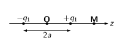
Pour déterminer le champ électrique sur l'axe \(Oz\), on superpose les champs coulombiens générés par chacune des charges \(\pm q_1\) soit
\begin{align*} \vv{E}&=\frac{q_1}{4\pi\epsilon_0\,\left(z-a\right)^2}\,\vv{u}_z-\frac{q_1}{4\pi\epsilon_0\,\left(z+a\right)^2}\,\vv{u}_z\\ &=\frac{q_1}{4\pi\epsilon_0}\,\left(\frac{1}{\left(z-a\right)^2}-\frac{1}{\left(z+a\right)^2}\right)\,\vv{u}_z\\ \text{avec }z\gg a\quad\vv{E}&\simeq\frac{q_1}{4\pi\epsilon_0\,z^2}\left(\cancel{1}+\frac{2a}{z}-\cancel{1}+\frac{2a}{z}\right)\,\vv{u}_z\\ &\simeq\frac{\vv{p}_1}{2\pi\epsilon_0\,z^3} \end{align*} - Supposons que les charges \(\pm q_2\) soient positionnées de la façon suivante
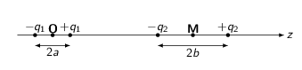
la force qu'exerce le premier dipôle sur le second est égale à
\begin{align*} \vv{F}&=q_2\vv{E}(z+b)-q_2\vv{E}(z-b)\\ &=\frac{\vv{p}_1\,q_2}{2\pi\epsilon_0}\left(\frac{1}{\left(z+b\right)^3}-\frac{1}{\left(z-b\right)^3}\right)\\ \text{avec }z\gg b\quad\vv{F}&\simeq\frac{\vv{p}_1\,q_2}{2\pi\epsilon_0\,z^3}\left(\cancel{1}-\frac{3b}{z}-\cancel{1}-\frac{3b}{z}\right)\\ &\simeq-\frac{\vv{p}_1\,q_2\,2b\times3}{2\pi\epsilon_0\,z^4}=-\frac{3p_1p_2}{2\pi\epsilon_0\,z^4}\vv{u}_z\text{ où }p_2=q_2\,2b \end{align*}Dans cette orientation, la force exercée par le dipôle 1 sur le dipôle 2 est donc attractive. En revanche, si la polarité du dipôle 2 est inversée, la force est alors répulsive.
- Force de Keesom : interaction entre deux molécules présentant chacune un
moment dipolaire permanent
Le temps passé dans la configuration où \(\vv{p}_1\) et \(\vv{p}_2\) sont alignés est égal à
\begin{align*} \frac{t_1}{t_1+t_2}&=A\exp\left(\frac{\vv{p}_2.\vv{E}_{1\to2}}{k_BT}\right)\\ &\simeq A\left(1+\frac{\vv{p}_2.\vv{E}_{1\to2}}{k_BT}\right) \end{align*}De même, le temps \(t_2\) pendant lequel les dipôles sont inversés s'écrit
\begin{align*} \frac{t_2}{t_1+t_2}&=A\exp\left(-\frac{\vv{p}_2.\vv{E}_{1\to2}}{k_BT}\right)\\ &\simeq A\left(1-\frac{\vv{p}_2.\vv{E}_{1\to2}}{k_BT}\right) \end{align*}On déduit des deux approximations précédentes que \(A=\frac{1}{2}\).
Ainsi, la force moyenne entre les deux dipôles devient
\begin{align*} \langle\vv{F}\rangle&=\vv{F}\times\frac{t_1}{t_1+t_2}-\vv{F}\times\frac{t_2}{t_1+t_2}\text{ où }\vv{F}=-\frac{3p_1p_2}{2\pi\epsilon_0\,z^4}\vv{u}_z\\ &=\frac{\vv{F}}{2}\times\frac{2\vv{p}_2.\vv{E}_{1\to2}}{k_BT}=-\frac{3p_1p_2^2\,\vv{E}_{1\to2}}{2\pi\epsilon_0k_BT\,z^4}\\ &=-\frac{3p_1^2p_2^2}{4\pi^2\epsilon_0^2k_BT\,z^7}\,\vv{u}_z\text{ car }\vv{E}_{1\to2}=\frac{\vv{p}_1}{2\pi\epsilon_0\,z^3} \end{align*} - Force de Debye : interaction entre une molécule présentant un moment
dipolaire permanent et une molécule présentant un moment dipolaire induit
Le moment dipolaire induit par le champ électrique du premier dipôle est
\begin{align*} \vv{p}_2&=\alpha\epsilon_0\,\vv{E}_\text{ext.}\text{ où }\vv{E}_\text{ext.}=\frac{\vv{p}_1}{2\pi\epsilon_0\,z^3}\\ &=\frac{\alpha\vv{p}_1}{2\pi\,z^3}\,\vv{u}_z \end{align*}La force exercée par la première moléculé est la même que précédemment à savoir \(\vv{F}=-\frac{3p_1p_2}{2\pi\epsilon_0\,z^4}\,\vv{u}_z\) avec \(\vv{p}_2=\frac{\alpha\vv{p}_1}{2\pi\,z^3}\) soit
\begin{align*} \vv{F}&=-\frac{3p_1p_2}{2\pi\epsilon_0\,z^4}\,\vv{u}_z\\ &=-\frac{3\alpha\,p_1^2}{4\pi^2\epsilon_0\,z^7}\,\vv{u}_z\\ \end{align*} - Force de London : interaction entre deux atomes ou molécules ne présentant
pas de moment dipolaire permanent
Supposons qu'à un instant donné, le moment dipolaire du premier atome/molécule vaille \(\vv{p}_1\). En moyenne, le moment dipolaire du second atome/molécule est nul et il n'y a pas d'interaction dipôle-dipôle. Cependant, du fait de la valeur non nulle de \(\vv{p}_1\) à l'instant considéré, il se superpose au moment dipolaire naturel du second atome/molécule, un moment dipolaire induit. Il découle de la présence de ce moment dipolaire induit, une force induite égale à \(-\frac{3\alpha p_1^2}{4\pi^2\epsilon_0\,z^7}\). En moyenne, la force induite est ainsi égale à
\begin{align*} \langle\vv{F}_{1\to2}^\text{induit}\rangle&=-\frac{3\alpha\,\langle p_1^2\rangle}{4\pi^2\epsilon_0\,z^7}\,\vv{u}_z \end{align*}En tenant compte du même effet mais générée par le second atome/molécule sur le premier et en considérant les deux atomes/molécules identiques i.e. \(\vv{p}_1=\vv{p}_2=\vv{p}\), on obtient une force moyenne
\begin{align*} \langle\vv{F}\rangle&=-2\times\frac{3\alpha\,\langle p^2\rangle}{4\pi^2\epsilon_0\,z^7}\,\vv{u}_z\\ &=-\frac{3\alpha\,\langle p^2\rangle}{2\pi^2\epsilon_0\,z^7}\,\vv{u}_z \end{align*}
4 TD4 : Les milieux diélectriques
4.1 Introduction
Historiquement, la découverte expérimentale des diélectriques est à mettre au profit de Michael Faraday qui nota que l'introduction d'un isolant entre les armatures d'un condensateur modifiait sa capacité.
On exprime la polarisation \(\vv{P}\) d'un matériau comme la densité volumique de moment dipolaire \(\vv{p}\) soit \(\vv{P}=\frac{d\vv{p}}{d\tau}\). En calculant le potentiel électrique à partir d'une distribution de moment dipolaire, on déduit que la densité volumique de charge liées ou polarisées \(\rho_P\) est égale à la divergence du vecteur polarisation : \(\rho_P=-\div\vv{P}\). De même, la densité surfacique de charges liées est égale à \(\sigma_P=\vv{P}.\vv{n}\). L'équation de Maxwell-Gauss devient
\begin{align*} \div\vv{E}&=\frac{\rho_\text{libre}+\rho_\text{liée}}{\epsilon_0}=\frac{\rho_\text{libre}-\div\vv{P}}{\epsilon_0} \end{align*}En posant le vecteur \(\vv{D}=\epsilon_0\vv{E}+\vv{P}\), on obtient l'équation locale suivante
\begin{align*} \div\vv{D}=\rho_\text{libre}\rightarrow\varoiint_S\vv{D}.\,d\vv{S}=\Upsigma Q_\text{libre} \end{align*}Dans le cas particulier d'un milieu Linéaire, Homogène et Isotrope (LHI), la polarisation est égale à \(\vv{P}=\epsilon_0\,\chi_e\vv{E}\) où \(\chi_e\) est un nombre positif, sans dimension, appelé la susceptibilité diélectrique. Dans ce cas, le vecteur \(\vv{D}\) devient
\begin{align*} \vv{D}=\epsilon_0\vv{E}\underbrace{(1+\chi_e)}_{\epsilon_r}=\epsilon\vv{E} \end{align*}où \(\epsilon\) et \(\epsilon_r\) sont appellés respectivement la permitivité absolue et la permitivité relative du diélectrique.
4.2 Boule uniformément polarisée
- La polarisation est uniforme \(\vv{P}=P\vv{u}_z\) 5, il n'y a donc pas de charge volumique liée \(\rho_P=-\div\vv{P}=0\). Il n'y a pas de charge libre d'où \(\rho=\rho_P+\rho_L=0\). L'équation de Poisson \(\Delta V=-\frac{\rho}{\epsilon_0}=0\) devient une équation de Laplace.
- L'invariance du problème par rotation d'angle \(\phi\) implique que le potentiel
\(V\) ne dépende pas de cette coordonnée. En posant
\(V(r,\theta)=f(r)\,\cos\theta\) avec
\(f(r)=\Sigma_{-\infty}^{+\infty}a_nr^n\). Le lapacien en coordonnées
sphériques s'écrit
\begin{align*}
\Delta V(r,\theta)&=\frac{1}{r}\frac{\partial^2}{\partial r^2}\left(rV(r,\theta)\right)+\frac{1}{r^2\sin\theta}\frac{\partial}{\partial\theta}\left(\sin\theta\frac{\partial V}{\partial\theta}\right)
\end{align*}
soit
\begin{align*} \frac{\partial^2}{\partial r^2}\left(rV(r,\theta)\right)&=\cos\theta\times\sum_{-\infty}^{+\infty}a_n\times n(n+1)r^{n-1}\\ \frac{\partial}{\partial\theta}\left(\sin\theta\frac{\partial V(r,\theta)}{\partial\theta}\right)&=\Sigma_{-\infty}^{+\infty}a_nr^n\times\left(\cos\theta\frac{\partial V}{\partial\theta}+\sin\theta\frac{\partial^2V}{\partial\theta^2}\right)\\ &=\Sigma_{-\infty}^{+\infty}a_nr^n\times\left(-\cos\theta\sin\theta-\sin\theta\cos\theta\right)\\ &=-2\cos\theta\sin\theta\times\Sigma_{-\infty}^{+\infty}a_nr^n \end{align*}L'équation de Laplace devient
\begin{align*} \Delta V=0&=\cos\theta\times\Sigma_{-\infty}^{+\infty}a_n\times n(n+1)r^{n-2}-2\cos\theta\times\Sigma_{-\infty}^{+\infty}a_nr^{n-2}\\ 0&=n(n+1)-2\\ 0&=(n+2)(n-1) \end{align*}Les seuls coefficients non nuls sont donc \(a_{-2}\) et \(a_1\). Le potentiel \(V\) en tout point de l'espace s'écrit
\begin{align*} V(r,\theta)=\left(\frac{a_{-2}}{r^2}+a_1r\right)\cos\theta \end{align*} - Les potentiels \(V_i\) et \(V_e\) ne doivent pas diverger (équivalent à dire
qu'ils doivent rester finis) d'où lorsque \(r\to0\), \(V_i\) fini impose que
\(a_{-2}\) soit nul. De même, lorsque \(r\to\infty\), \(V_e\) reste fini et donc
\(a_1=0\)
\begin{align*}
V_i(r,\theta)&=a_1r\cos\theta\\
V_e(r,\theta)&=\frac{a_{-2}\cos\theta}{r^2}
\end{align*}
Par ailleurs, la continuité du potentiel en \(r=R\) conduit à
\begin{align*} V_i(R,\theta)&=V_e(R,\theta)\\ a_1R\cancel{\cos\theta}&=\frac{a_{-2}\cancel{\cos\theta}}{R^2}\\ a_1&=\frac{a_{-2}}{R^3} \end{align*}On utilise finalement la discontinuité de la composante normale du vecteur \(\vv{D}\) à l'interface diélectrique-vide
\begin{align*} \left(\vv{D}_ e(R,\theta)-\vv{D}_i(R,\theta)\right).\vv{u}_r&=\sigma_\text{libre}=0\\ &\text{avec }\vv{D}=\epsilon_0\vv{E}+\vv{P}\\ \left(\epsilon_0\vv{E}_e+\cancel{\vv{P}_e}-\epsilon_0\vv{E}_i-\vv{P}_i\right).\vv{u}_r&=0\\ \epsilon_0\left(\vv{E}_e-\vv{E}_i\right).\vv{u}_r&=\vv{P}.\vv{u}_r=P\cos\theta \end{align*}Les champs électriques \(\vv{E}_e\) et \(\vv{E}_i\) sont respectivement égaux à
\begin{align*} \vv{E}_e&=-\grad V_e=-\grad\left(\frac{a_{-2}\cos\theta}{r^2}\right)\\ &=-\frac{\partial V_e}{\partial r}\vv{u}_r-\frac{1}{r}\frac{\partial V_e}{\partial\theta}\vv{u}_\theta\\ &=a_{-2}\cos\theta\times\frac{2}{r^3}\vv{u}_r+\frac{1}{r^3}a_{-2}\sin\theta\vv{u}_\theta\\ \vv{E}_i&=-\grad V_i=-\grad\left(a_1r\cos\theta\right)\\ &=-a_1\cos\theta\vv{u}_r+a_1\sin\theta\vv{u}_\theta \end{align*}La relation de passage projeté selon \(\vv{u}_r\) devient
\begin{align*} \frac{2a_{-2}}{R^3}\cancel{\cos\theta}+a_1\cancel{\cos\theta}&=\frac{P\cancel{\cos\theta}}{\epsilon_0}\\ \frac{2a_{-2}}{R^3}+\frac{a_{-2}}{R^3}&=\frac{P}{\epsilon_0}\\ a_{-2}&=\frac{PR^3}{3\epsilon_0}\text{ et }a_1=\frac{P}{3\epsilon_0} \end{align*}d'où
\begin{align*} V_e(r,\theta)&=\frac{PR^3}{3\epsilon_0}\frac{\cos\theta}{r^2}\\ V_i(r,\theta)&=\frac{P}{3\epsilon_0}\,r\cos\theta\\ \vv{E}_e(r,\theta)&=\frac{PR^3}{3\epsilon_0r^3}\left(2\cos\theta\vv{u}_r+\sin\theta\vv{u}_\theta\right)\\ \vv{E}_i(r,\theta)&=-\frac{P}{3\epsilon_0}\left(\underbrace{\cos\theta\vv{u}_r-\sin\theta\vv{u}_\theta}_{\vv{u}_z}\right)\\ &=-\frac{\vv{P}}{3\epsilon_0}=\text{champ dépolarisant} \end{align*}Le champ électrique extérieur s'apparente au champ électrique crée par un dipôle ponctuel \(\vv{p}\) placé à l'origine avec \(\vv{p}=\frac{4}{3}\pi R^3\vv{P}\). Pour rappel, le champ électrique crée par un dipôle est
\begin{align*} \vv{E}\simeq\frac{1}{4\pi\epsilon_0}\,\frac{3(\vv{p}.\vv{u}_r)\vv{u}_r-\vv{p}}{r^3} \end{align*}Or l'expression
\begin{align*} 2\cos\theta\vv{u}_r+\sin\theta\vv{u}_\theta=3\cos\theta\vv{u}_r-\vv{u}_z \end{align*}car \(\vv{u}_z=\cos\theta\vv{u}_r-\sin\theta\vv{u}_\theta\). Sachant que \(\vv{P}.\vv{u}_r=P\cos\theta\) on obtient
\begin{align*} \vv{E}_e=\frac{R^3}{3\epsilon_0}\,\frac{3\left(\vv{P}.\vv{u}_r\right).\vv{u}_r-\vv{P}}{r^3} \end{align*}d'où \(\vv{p}=\frac{4}{3}\pi R^3\vv{P}\), on retrouve donc bien \(\vv{P}=\frac{d\vv{p}}{d\tau}\).
4.3 Plaque diélectrique
4.3.1 Le condensateur plan

Symétries & invariances de la distribution de charges
- tout plan contenant l'axe \(Oz\) est plan de symétrie d'où \(\vv{E}\parallel\vv{u}_z\)
- invariance par translation selon \(Ox\) et \(Oy\) d'où \(E=f(\cancel{x},\cancel{y},z)\)
L'orientation du champ électrique \(\vv{E}=E(z)\vv{u}_z\) permet la définition d'une surface fermée de forme cylindrique à l'intérieur du condensateur. Le théorème de Gauss implique
\begin{align*} \varoiint_S\vv{E}.\vv{dS}=\frac{\Upsigma Q_\text{int.}}{\epsilon_0}&=0\text{ (pas de charge à l'intérieur du condensateur)}\\ E(z_1)S - E(z_2)S&=0\rightarrow E(z_1)=E(z_2)=E_0\\ \vv{E}=E_0\vv{u}_z&=-\grad V=-\frac{dV}{dz}\vv{u}_z\\ \int_0^aE_0dz&=-\int_0^{V_0}dV\rightarrow E_0a=-V_0 \end{align*}Répartition des charges
- en \(z=0\) \begin{align*} \left(\vv{E}_e-\vv{E}_i\right).(-)\vv{u}_z&=\frac{\sigma_S}{\epsilon_0}\\ E_0&=\frac{\sigma_S}{\epsilon_0}\rightarrow Q_0=\sigma_S\times\ell\times L=-\frac{V_0\epsilon_0}{a}\ell\times L \end{align*}
- en \(z=a\) \begin{align*} \left(\vv{E}_e-\vv{E}_i\right).\vv{u}_z&=\frac{\sigma_S}{\epsilon_0}\\ -E_0&=\frac{\sigma_S}{\epsilon_0}\rightarrow Q_a=-\sigma_S\times\ell\times L=\frac{V_0\epsilon_0}{a}\ell\times L=-Q_0 \end{align*}
Capacité du condensateur
\begin{align*} Q_0=C_0V_0\rightarrow C_0=\frac{\epsilon_0\ell\times L}{a}>0 \end{align*}Énergie stockée dans le condensateur
\begin{align*} U_0=\frac{1}{2}C_0V_0^2&\rightarrow U_0=\frac{\epsilon_0\ell\times L}{2a}V_0^2\\ u_\text{em}=\frac{\epsilon_0E^2}{2}&\rightarrow U=\int u_\text{em}\,d\tau=\frac{\epsilon_0\ell\times L}{2a}V_0^2=U_0 \end{align*}L'énergie stockée dans le condensateur est bien d'origine électrostatique.
4.3.2 Plaque diélectrique infinie

- Potentiel crée par un dipôle \(d\vv{p}\)
\begin{align*}
dV(M)=\frac{1}{4\pi\epsilon_0}\,\frac{d\vv{p}.\vv{AM}}{AM^3}\text{ où \(A\) est le barycentre du dipôle}
\end{align*}
La polarisation \(\vv{P}\) représente la densité volumique de moment dipolaire \(\frac{d\vv{p}}{d\tau}\). La polarisation surfacique \(\vv{P}_S\) est ainsi égale à
\begin{align*} \vv{P}_S&=\frac{d\vv{p}}{d\vv{S}}\\ d\vv{p}&=P_S\,d\vv{S}=P_S\,dS\vv{n}\\ dV(M)&=\frac{1}{4\pi\epsilon_0}\,\frac{P_SdS\vv{n}\vv{AM}}{AM^3}\\ &\text{avec }\vv{AM}=-r\vv{u}_r\\ dV(M)&=-\frac{P_S}{4\pi\epsilon_0}\,d\Omega \end{align*}En fonction de la position du point \(M\) i.e. au dessus ou en dessous du plan infini le potentiel électrique \(V(M)\) change de signe du fait que l'angle solide \(\Omega=\pm2\pi\) sr.

Ainsi, le potentiel vu en un point au dessus de la surface du diélectrique est égal à
\begin{align*} V(M_+)&=\int_\text{plan}-\frac{P_S}{4\pi\epsilon_0}\,d\Omega=\frac{P_S}{2\epsilon_0}\\ V(M_-)&=-\frac{P_S}{2\epsilon_0} \end{align*}Dans les deux cas, le potentiel électrique étant constant : \(\vv{E}=-\grad V=\vv{0}\).
- En décomposant la plaque en tranche d'épaisseur infinitésimale \(dz'\), chacune
porte une densité surfacique \(dP_S=P(z')dz'\)
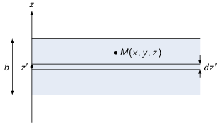
En fonction de la position \(z\) du point \(M\), le potentiel électrique est
- si \(z>z'\) \begin{align*} dV(z)=\frac{dP_S}{2\epsilon_0}=\frac{P(z')dz'}{2\epsilon_0} \end{align*}
- si \(z
On distingue par suite 3 situations
- pour tout point M tel que \(z<0\) \begin{align*} V_d(M)=-\underbrace{\int_0^b\frac{P(z')dz'}{2\epsilon_0}}_{\text{indépendant de $z$}}=\text{constante}\to\vv{E}=\vv{0} \end{align*}
- pour tout point M tel que \(z>b\) \begin{align*} V_d(M)=+\underbrace{\int_0^b\frac{P(z')dz'}{2\epsilon_0}}_{\text{indépendant de $z$}}=\text{constante}\to\vv{E}=\vv{0} \end{align*}
- pour tout point M tel que \(0
4.3.3 Condensateur diélectrique à potentiel constant
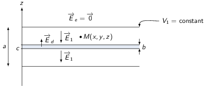
- Les symétries restent les mêmes à savoir que tout plan contenant l'axe \(Oz\) est plan de symétrie de la distribution de charge. Les invariances du problèmes restent également les mêmes d'où \(\vv{E}(M)=E(z)\vv{u}_z\).
- à l'extérieur de la plaque diélectrique \begin{align*} \vv{E}=\vv{E}_1+\vv{0}\rightarrow\text{ uniforme} \end{align*}
- à l'intérieur de la plaque diélectrique \begin{align*} \vv{E}&=\vv{E}_1-\frac{\vv{P}}{\epsilon_0}\\ &=\vv{E}_1-\frac{\chi_e\epsilon_0\vv{E}}{\epsilon_0}\\ &=\frac{\vv{E}_1}{1+\chi_e}\rightarrow\text{ uniforme} \end{align*}
On a vu que la densité surfacique de charge \(\sigma_S=\pm\epsilon_0E_0\) sur les armatures du condensateur est à l'origine d'un champ électrique constant. Pour créer un champ uniforme d'expression \(-\frac{\vv{P}}{\epsilon_0}\), cela reviendrait à placer deux plaques i.e. deux armatures chargées en surface par des densités \(\sigma_S=\pm P\). Leurs charges \(Q_P=\pm P\times\ell\times L\).
- Le potentiel électrique \(V_1\) est égal à
\begin{align*}
\vv{E}&=-\grad V_1\rightarrow V_1=-\int_0^aE(z)dz\\
V_1&=-\int_0^c-E_1dz-\int_c^{b+c}-\frac{E_1}{1+\chi_e}dz-\int_{b+c}^a-E_1dz\\
&=\cancel{E_1\times c}+\frac{E_1}{1+\chi_e}\times b+E_1\times a-E_1\times(b+\cancel{c})\\
&=E_1\left(a+\frac{b}{1+\chi_e}-b\right)=E_1\left(a-\frac{b\chi_e}{1+\chi_e}\right)
\end{align*}
La charge des armatures est égale
\begin{align*} Q_1(z=0)=\sigma_Z\times\ell\times L=-E_1\epsilon_0\,\ell\times L\\ Q_1(z=a)=-\sigma_Z\times\ell\times L=E_1\epsilon_0\,\ell\times L \end{align*}La capacité \(C_1\) du condensateur diélectrique est égale à \(\frac{|Q_1|}{V_1}\)
\begin{align*} C_1&=\frac{|Q_1|}{V_1}=\frac{\epsilon_0\cancel{E_1}\ell\times L}{\cancel{E_1}\left(a-\frac{b\chi_e}{1+\chi_e}\right)}\\ &=\frac{\epsilon_0\ell\times L}{a-\frac{b\chi_e}{1+\chi_e}}>C_0 \end{align*}L'ajout du diélectrique a contribué à l'augmentation de la capacité du condensateur. L'énergie stockée dans le condensateur est
\begin{align*} U_1&=\frac{1}{2}C_1V_1^2\\ &=\frac{1}{2}\epsilon_0E_1^2\ell\times La\left(1-\frac{\chi_e}{1+\chi_e}\frac{b}{a}\right) \end{align*} - Le déplacement électrique \(\vv{D}\) est égal à \(\epsilon_0\vv{E}+\vv{P}\). Le theorème de Gauss appliqué aux diélectriques implique que \(\div\vv{D}=\rho_\text{libre}\rightarrow\varoiint\vv{D}.d\vv{S}=Q_\text{libre}^\text{int.}\). En tout point situé entre les armatures du condensateur y compris à l'intérieur du diélectrique, il n'y a pas de charges libres. Par ailleurs, le vecteur déplacement \(\vv{D}\) est égal dans le diélectrique à \(\epsilon_0\vv{E}+\vv{P}\) et à \(\epsilon_0\vv{E}_1\) entre le diélectrique et les armatures du condensateur. En choisissant une surface fermée cylindrique dont les sections circulaires sont de part et d'autre de l'interface diélectrique-vide, on a \begin{align*} \varoiint\vv{D}.\,d\vv{S}&=0\\ D_\text{vide}S-D_\text{diélectrique}S&=0\\ \vv{D}_\text{vide}&=\vv{D}_\text{diélectrique}\\ \epsilon_0\vv{E}_1&=\epsilon_0\vv{E}+\vv{P}\\ \epsilon_0\vv{E}_1&=\epsilon_0\vv{E}+\epsilon_0\chi_e\vv{E}\\ \vv{E}&=\frac{\vv{E}_1}{1+\chi_e} \end{align*}
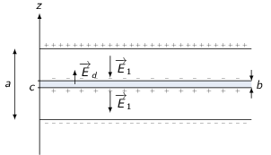
Figure 2: Distribution des charges de polarisation et du condensateur après ajout du diélectrique
4.3.4 Condensateur diélectrique à charges constantes
Les charges des armatures restent à \(Q_2=\pm\epsilon_0\frac{\ell L}{a}V_0=Q_0\) lorsque l'on débranche le générateur. Le champ électrique à l'extérieur de la plaque est \(\vv{E}_0\) et \(\frac{\vv{E}_0}{1+\chi_e}\) à l'intérieur du diélectrique. Le potentiel est alors égal à \(V_2=E_0\left(a-\frac{b\chi_e}{1+\chi_e}\right)\) d'où \(C_2=\frac{|Q_2|}{V_2}=\epsilon_0\frac{\ell\times L}{a-\frac{b\chi_e}{1+\chi_e}}=C_1\). Finalement, l'énergie stockée \(U_2\) est
\begin{align*} U_2=\frac{1}{2}C_2V_2^2&=\frac{1}{2}\epsilon_0\ell LaE_0^2\left(1-\frac{\chi_e}{1+\chi_e}\frac{b}{a}\right)\\ &=\frac{1}{2}\epsilon_0\ell La\frac{V_0^2}{a}\left(1-\frac{\chi_e}{1+\chi_e}\frac{b}{a}\right)\\ &=U_0\left(1-\frac{\chi_e}{1+\chi_e}\frac{b}{a}\right)\leq U_0 \end{align*}4.3.5 Force électrostatique sur la plaque diélectrique

On supposera la situation identique à celle de la question 4.3.3 soit à potentiel constant \(V=V_1=E_1\left(a-\frac{b\chi_e}{1+\chi_e}\right)\). Dans la région \(\unicode{x2460}\), le champ électrique est égal à \(\vv{E}'_1=-\frac{V_1}{a}\vv{u}_z\).
- Les densités surfaciques de charge sont respectivement
- région \(\unicode{x2460}\) : \begin{align*} \sigma_S^\text{\(\unicode{x2460}\)}=\epsilon_0|E'_1|=\epsilon_0\frac{E_1}{a}\left(a-\frac{b\chi_e}{1+\chi_e}\right) \end{align*}
- région \(\unicode{x2461}\) : \begin{align*} \sigma_S^\text{\(\unicode{x2461}\)}=\epsilon_0E_1 \end{align*}
La charge \(Q\) du condensateur est égale à
\begin{align*} Q&=\int_0^x\sigma_S^\text{\(\unicode{x2461}\)}\,\ell dx+\int_x^L\sigma_S^\text{\(\unicode{x2460}\)}\,\ell dx\\ &=\epsilon_0E_1\ell\left(\frac{x}{a}\left(a-\frac{b\chi_e}{1+\chi_e}\right)+L-x\right)\\ &=\epsilon_0E_1\ell\left(L-\frac{\chi_e}{1+\chi_e}\frac{bx}{a}\right) \end{align*}La capacité \(C\) est égale à \(\frac{Q}{V_1}\), l'énergie stockée \(U=\frac{1}{2}CV_1^2=\frac{1}{2}QV_1\).
- Lorsque la plaque diélectrique est introduite \(x\nearrow\), la charge du
condensateur diminue de même que la capacité \(C\). L'énergie stockée diminue
donc de pair avec l'introduction de la plaque.
\begin{align*}
dU=\frac{1}{2}V_1^2dC=\frac{1}{2}V_1dQ&=\frac{1}{2}V_1\frac{dQ}{dx}dx\\
&=\frac{1}{2}V_1\epsilon_0E_1\ell(-)\frac{\chi_e}{1+\chi_e}\frac{b}{a}dx
\end{align*}
Le travail \(dW_\text{op.}\) fourni par l'opérateur correspond au produit scalaire de la force \(\vv{F}_\text{op.}\) par le déplacement infinitésimal \(d\vv{x}\)
\begin{align*} dW_\text{op.}=\vv{F}_\text{op.}.d\vv{x}=F_\text{op.}dx=-Fdx \end{align*}La puissance du générateur \(P=V_1\times I\) d'où le travail \(dW_\text{g}\)
\begin{align*} dW_\text{g}=Pdt=V_1Idt&=V_1dQ\\ &=-V_1\epsilon_0E_1\ell(-)\frac{\chi_e}{1+\chi_e}\frac{b}{a}dx=2dU \end{align*}Ainsi la variation d'énergie stockée correspond à
\begin{align*} dU&=dW_\text{g}+dW_\text{op.}\\ dU&=2dU+dW_\text{op.}\\ F_\text{op.}dx&=-dU=\frac{1}{2}V_1\epsilon_0E_1\ell\frac{\chi_e}{1+\chi_e}\frac{b}{a}dx\\ F_\text{op.}&=\frac{1}{2}V_1\epsilon_0E_1\ell\frac{\chi_e}{1+\chi_e}\frac{b}{a}>0 \end{align*}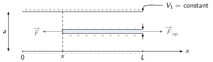
4.4 Boule chargée flottant sur un diélectrique
- Le potentiel \(V(\vv{r})\) vérifie l'équation de Poisson dans chacun des
milieux \(\Delta V(\vv{r})=-\frac{\rho_\text{tot.}}{\epsilon_0}\). Toutefois,
le milieu \(\unicode{x2460}\) étant le vide et un conducteur n'ayant pas de densité
volumique de charge libre, le potentiel \(V_1(\vv{r})\) vérifie l'équation de
Laplace6 \(\Delta V_1=0\). Les conditions aux limites sont les suivantes
- continuité du potentiel à la surface de la boule \(V_1(R)=V_2(R)=V_S\),
- à l'infini \(r\to\infty\), \(V_1(r\to\infty)=V_2(r\to\infty)=0\).
- \(V(\vv{r})=V(r)\)
- L'équation de Laplace dans le milieu \(\unicode{x2460}\) s'écrit en coordonnées
sphériques
\begin{align*}
\Delta V_1=\frac{1}{r^2}\frac{\partial}{\partial r}\left(r^2\frac{\partial V_1(r)}{\partial r}\right)&=0\\
r^2\frac{\partial V_1(r)}{\partial r}&=\text{constante}\\
V_1(r)&=\frac{A}{r}+B
\end{align*}
En utilisant les conditions aux limites, on a \(V_1(r\to\infty)=B=0\) et \(V_1(R)=V_S\rightarrow A=RV_S\)
\begin{align*} V_1(r)&=\frac{V_SR}{r} \end{align*} - Le champ électrique se déduit de la relation \begin{align*} \vv{E}_1&=-\grad V_1\\ &=-\frac{\partial V_1(r)}{\partial r}\vv{u}_r\\ &=\frac{V_SR}{r^2}\vv{u}_r \end{align*}
- À la traversée de la surface conducteur-vide/diélectrique, la composante
normale à la surface (ici \(\parallel\vv{u}_r\)) du vecteur déplacement
\(\vv{D}\) est discontinue et égale à la densité surfacique de charge
libre. Le champ électrique étant par ailleurs nul à l'intérieur d'un
conducteur, nous avons en \(r=R\)
\begin{align*}
\vv{D}_1(R).\vv{u}_r&=\sigma_{\ell1}\\
\epsilon_0E_1(R)&=\sigma_{\ell1}\\
\text{d'où }\sigma_{\ell1}&=\epsilon_0\frac{V_S}{R}
\end{align*}
Pour déterminer, la densité surfacique de charge libre dans le milieu \(\unicode{x2461}\), on utilise la même relation soit
\begin{align*} \vv{D}_2(R).\vv{u}_r&=\sigma_{\ell1}\\ \epsilon_r\epsilon_0E_2(R)&=\sigma_{\ell2} \end{align*}Pour calculer \(\vv{E}_2.\vv{u}_r\), on utilise la relation de continuité de la composante tangentielle du champ électrique à l'interface milieu \(\unicode{x2460}\) - milieu \(\unicode{x2461}\) et en surface du conducteur soit en \(r=R\). On a ainsi
\begin{align*} \vv{E}_2(r=R).\vv{u}_r&=\vv{E}_1(r=R).\vv{u}_r\\ E_2(R)&=E_1(R)=\frac{V_S}{R} \end{align*}d'où
\begin{align*} \sigma_{\ell2}&=\epsilon_r\epsilon_0\frac{V_S}{R}=\epsilon_r\sigma_{\ell1} \end{align*}Les densités surfaciques de charge de polarisation se déduisent de la disontinuité du vecteur polarisation \(\vv{P}=\epsilon_0\chi_e\vv{E}_2\). L'absence de polarisation dans le milieu \(\unicode{x2460}\) fait que \(\sigma_{P1}=0\) et
\begin{align*} \sigma_{P2}&=-\vv{P}.\vv{u}_r\\ &=-\epsilon_0\chi_e\frac{V_S}{R} \end{align*} - Les conditions aux limites sont vérifiées et \(V(r)\) est solution de l'équation de Poisson → théorème d'unicité, \(V(r)\) est l'unique solution
- L'équation de Laplace dans le milieu \(\unicode{x2460}\) s'écrit en coordonnées
sphériques
\begin{align*}
\Delta V_1=\frac{1}{r^2}\frac{\partial}{\partial r}\left(r^2\frac{\partial V_1(r)}{\partial r}\right)&=0\\
r^2\frac{\partial V_1(r)}{\partial r}&=\text{constante}\\
V_1(r)&=\frac{A}{r}+B
\end{align*}
- En l'absence de potentiel \(V=0\) i.e. \(\sigma_{\ell1}=\sigma_{\ell2}=0\), seul
le quart de la boule est immergé. Le système étant à l'équilibre on déduit
ainsi la poussé d'Archimède s'exerçant sur la boule
\begin{align*}
\Upsigma\vv{F}&=\vv{0}\\
m\vv{g}-\frac{1}{4}\times\frac{4}{3}\pi R^3\rho_\text{diél.}\vv{g}&=\vv{0}\\
\rho_\text{diél.}&=\frac{3m}{\pi R^3}
\end{align*}
Lorsque la boule est au potentiel \(V_S\), le volume immergé correspond à la moitié du volume de la boule en raison de la pression électrostatique qui s'exerce à présent sur les parois du conducteur :
\begin{align*} &\Upsigma\vv{F}=\vv{0}\\ &m\vv{g}-\frac{1}{2}\times\frac{4}{3}\pi R^3\rho_\text{diél.}\vv{g}+\vv{F}_1+\vv{F}_2=\vv{0} \end{align*}où \(\vv{F}_1\) et \(\vv{F}_2\) correspondent aux forces de pression s'exerçant sur chacune des demi-sphères. Soit
\begin{align*} \vv{F}_{1,2}&=\iint P_{1,2}d\vv{S}\\ F_{1,2z}&=\vv{F}_{1,2}.\vv{u}_z=\int_0^{2\pi}d\phi\int_0^{\pi/2}P_{1,2}\cos\theta R^2\sin\theta d\theta\\ &\text{(seule la composante selon \(\vv{u}_z\) reste non nulle)}\\ &=2\pi R^2P_{1,2}\int_0^{\pi/2}\sin\theta d(\sin\theta)=2\pi R^2P_{1,2}\left[\frac{\sin^2\theta}{2}\right]_0^{\pi/2}\\ &=\pi R^2P_{1,2} \end{align*}Les pressions électrostatiques \(P_{1,2}\) sont égales à
\begin{align*} P_1&=\frac{\sigma^2_{\ell1}}{2\epsilon_0}\\ P_2&=\frac{d\vv{F}_2}{d\vv{S}}=\frac{\vv{E}_2dq}{d\vv{S}}\\ &=\frac{\sigma_{\text{tot.}2}/\epsilon_0\times\sigma_{\ell2}dS}{dS}\text{ et }\sigma_{\text{tot.}2}=\sigma_{\ell2}+\sigma_{P2}=\frac{\sigma_{\ell2}}{\epsilon_r}\\ &=\frac{\sigma^2_{\ell2}}{2\epsilon_0\epsilon_r}=\frac{\epsilon_r\sigma^2_{\ell1}}{2\epsilon_0} \end{align*}En projetant, le PFD selon \(\vv{u}_z\), on obtient finalement l'équation suivante
\begin{align*} -mg+\frac{3m}{\pi R^3}\times\frac{1}{2}\times\frac{4}{3}\pi R^3g+\frac{\sigma^2_{\ell1}}{2\epsilon_0}\pi R^2-\frac{\epsilon_r\sigma^2_{\ell1}}{2\epsilon_0}\pi R^2&=0\\ -mg+2mg+\frac{\epsilon^{\cancel{2}}_0V_S^2}{2\cancel{\epsilon_0}\cancel{R^2}}\pi \cancel{R^2}\left(1-\epsilon_r\right)&=0\\ mg+\frac{\epsilon_0V_S^2\pi}{2}\left(1-\epsilon_r\right)&=0\\ V_S&=\sqrt{\frac{2mg}{\epsilon_0\pi\left(\epsilon_r-1\right)}}\\ &=\sqrt{\frac{2\times10\times10^{-2}}{\pi\,8.85\,10^{-12}\times79}}=\unit[9.5]{kV} \end{align*}
4.5 Lame piézoélectrique
On suppose que les champs \(\vv{P},\vv{E}\) et \(\vv{D}\) sont parallèles à \(Oz\) et ne dépendent que de \(z\).
- À l'intérieur du diélectrique soit entre les armatures, il n'y a pas de
charges libres. On applique donc le théorème de Gauss au vecteur déplacement
\(\vv{D}\) en choisissant pour surface fermée un cylindre. Seuls les disques
de surface \(S\) en \(z_1\) et en \(z_2\) donnent un produit \(\vv{D}.d\vv{S}\) non
nul. On obtient ainsi
\begin{align*}
D(z=z_1)S-D(z=z_2)S=\Upsigma Q_\text{libre}&=0\\
D(z=z_1)&=D(z=z_2)=D
\end{align*}
L'expression du vecteur déplacement ne dépend donc pas de la position à l'intérieur du diélectrique. Pour déterminer la valeur du champ \(\vv{D}\), on se place à l'interface armature-diélectrique et on applique la relation de discontinuité de la composante normale du vecteur déplacement soit
\begin{align*} \left.\left(\vv{D}_\text{int.}-\cancel{\vv{D}_\text{ext.}}\right)\right|_{z=0}.\vv{u}_z&=\sigma_\ell=\frac{+q}{S}\\ \vv{D}&=\frac{q}{S}\,\vv{u}_z \end{align*} - La polarisation d'une lame piézoélectrique se décompose de la façon suivante
\begin{align*}
\vv{P}=\underbrace{\epsilon_0\chi\vv{E}}_{\vv{P}_\text{LHI}}+\underbrace{\frac{\epsilon\alpha\delta}{d}\vv{u}_z}_{\vv{P}_\text{piézo.}}
\end{align*}
où le premier terme induit un champ \(\vv{E}_\text{LHI}=\frac{\vv{D}}{\epsilon}\), le second terme générant un champ dépolarisant \(-\frac{\vv{P}_\text{piézo.}}{\epsilon_0}\). Le champ électrique à l'intérieur de la lame piézoélectrique s'écrit donc
\begin{align*} \vv{E}_\text{total}&=\vv{E}_\text{LHI}-\frac{\vv{P}_\text{piézo.}}{\epsilon_0}\\ &=\frac{\vv{D}}{\epsilon}-\frac{\epsilon_r\alpha\delta}{d}\vv{u}_z\\ &=\left(\frac{q}{\epsilon S}-\frac{\epsilon_r\alpha\delta}{d}\right)\vv{u}_z \end{align*}- La tension \(V(\delta,q)\) s'exprime ainsi \begin{align*} \vv{E}_\text{total}&=-\grad V=-\frac{dV}{dz}\vv{u}_z\\ V(\delta,q)=-\int_{V(0)}^{V(d)}dV&=\int_0^d\left(\frac{q}{\epsilon S}-\frac{\epsilon_r\alpha\delta}{d}\right)dz\\ V(\delta,q)&=\frac{qd}{\epsilon S}-\epsilon_r\alpha\delta \end{align*}
- À \(q=0\), le travail de l'opérateur s'écrit
\begin{align*}
dW_\text{op.}&=\vv{F}_\text{op.}.\vv{dz}\\
W_\text{op.}&=\int_0^\delta K\delta'd\delta'=K\frac{\delta^2}{2}+\text{constante}
\end{align*}
À \(\delta\) constant, le travail du générateur est le suivant
\begin{align*} dW_\text{G}&=Pdt=V\times Idt=Vdq\\ W_\text{G}&=\int_0^qV(\delta,q')dq'\\ &=\int_0^q\left(\frac{q'd}{\epsilon S}-\epsilon_r\alpha\delta\right)dq'\\ &=\frac{q^2d}{2\epsilon S}-\epsilon_r\alpha\delta q+\text{constante} \end{align*}L'énergie potentielle du système devient
\begin{align*} W(\delta,q)&=W_\text{op}(\delta)+W_\text{G}(\delta,q)+\text{constante}\\ W(0,0)&=0\to\text{constante}=0\\ W(\delta,q)&=\frac{K\delta^2}{2}+\frac{q^2d}{2\epsilon S}-\epsilon_r\alpha\delta q \end{align*} - Sachant que
\begin{align*}
dW(\delta,q)&=\frac{\partial W}{\partial\delta}d\delta+\frac{\partial W}{\partial q}dq\\
&=Fd\delta+Vdq
\end{align*}
on déduit que
\begin{align*} F(\delta,q)&=\frac{\partial W}{\partial\delta}=K\delta-\epsilon_r\alpha q \end{align*}et on vérifie que
\begin{align*} V(\delta,q)&=\frac{\partial W}{\partial q}=\frac{qd}{\epsilon S}-\epsilon_r\alpha\delta \end{align*}
5 TD5 : Magnétostatique
5.1 Introduction
En magnétostatique, les équations locales deviennent
\begin{align*} \div\vv{B} &= 0\\ \rot\vv{B} &= \mu_0\vv{j} \end{align*}soit, dans leurs versions intégrales
\begin{align*} \iint_\mathcal{S}\vv{B}.\vv{dS} &= 0\\ \oint_\mathcal{C}\vv{B}.\vv{d\ell} &= \mu_0I_\mathcal{C}(\text{courant enlacé}) \end{align*}Le potentiel vecteur \(\vv{A}\) est lié au champ magnétique par la relation \(\vv{B}=\rot\vv{A}\), le vecteur potentiel étant, par ailleurs, à flux conservatif \(\div\vv{A}=0\) (jauge de Coulomb). On déduit ainsi l'équation vectorielle de Poisson \(\vv{\Delta}\vv{A}=-\mu_0\vv{j}\) soit
\begin{align*} \vv{A}(M)&=\frac{\mu_0}{4\pi}\iiint\frac{\vv{j}(P)}{PM}\,d\tau\\ \vv{B}(M)&=\frac{\mu_0}{4\pi}\iiint\frac{\vv{j}(P)\times\vv{PM}}{PM^3}\,d\tau=\frac{\mu_0}{4\pi}\oint_\mathcal{C}\frac{I\vv{d\ell}\times\vv{PM}}{PM^3} \end{align*}5.2 Solénoïde fini
- Les plans \((xMz)\) et \((yMz)\) sont tous deux plans d'antisymétrie de la distribution de courant : le champ magnétique pour tout point \(M\) appartenant à l'axe \(Oz\) est compris dans chacun de ces plans soit \(\vv{B}(M\in Oz)\parallel\vv{u}_z\).
- En raison des symétries du problème, le système de coordonnées cylindriques est le mieux adapté à la description du problème. En particulier, le système est invariant par rotation d'angle θ et le plan \((\vv{u}_r,\vv{u}_z)\) est plan d'antisymétrie : \(\vv{B}(M)=B_r(r,z)\vv{u}_r+B_z(r,z)\vv{u}_z\)
- Symétrie du champ magnétique
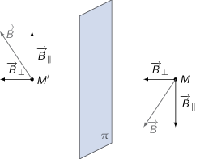
Le plan \((xOy)\) est plan de symétrie de la distribution de courant impliquant
\begin{align*} B_z(r,z)&=B_z(r,-z)\\ B_r(r,z)&=-B_r(r,-z) \end{align*} - Calcul du champ magnétique généré par une boucle de courant
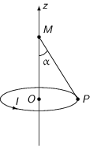
Loi de Biot & Savart
\begin{align*} %%\vv{dB}(M)&=\frac{\mu_0I}{4\pi}\,\frac{\vv{d\ell}\times\vv{PM}}{PM^3}\\ \vv{B}(M)&=\frac{\mu_0I}{4\pi}\oint_\mathcal{C}\frac{\vv{d\ell}\times\vv{PM}}{PM^3}\\ &\text{où }\left\{ \begin{array}{rl} \vv{d\ell} &=Rd\theta\,\vv{u}_\theta\\ \vv{PM} &=\vv{PO} + \vv{OM} = -R\vv{u}_r + z\vv{u}_z \\ \end{array} \right.\\ &\text{soit }\vv{d\ell}\times\vv{PM}=\left| \begin{array}{l} 0\\Rd\theta\\0 \end{array} \right.\times\left| \begin{array}{l} -R\\0\\z \end{array} \right.=Rd\theta z\vv{u}_r+R^2d\theta\vv{u}_z \end{align*}En raison des symétries invoquées à la question 1), le champ magnétique est colinéaire au vecteur \(\vv{u}_z\) d'où
\begin{align*} \vv{B}(M)&=\frac{\mu_0I}{4\pi}\,\frac{R^2}{PM^3}\int_0^{2\pi}d\theta\vv{u}_z\\ &=\frac{\mu_0I}{2}\,\frac{R^2}{PM^3}\vv{u}_z\text{ avec } PM=\frac{R}{\sin\alpha}\\ &=\frac{\mu_0I}{2}\,\frac{\cancel{R^2}}{R^{\cancel{3}}}\,\sin^3\alpha\,\vv{u}_z=\frac{\mu_0I}{2R}\,\sin^3\alpha\,\vv{u}_z \end{align*}Pour calculer le champ magnétique généré par un solénoïde fini, on superpose les champs magnétiques générés par les \(N\) spires. En considérant une épaisseur \(dz'\) contenant donc \(n\times dz=\frac{N}{L}\times dz'\) spires, le champ magnétique ainsi généré a pour expression
\begin{align*} \vv{dB}_\text{solénoïde}(M)&=\vv{B}_\text{spire}(M)\times n\times dz'\\ \vv{B}_\text{solénoïde}(M)&=\int_{-L/2}^{L/2}\frac{\mu_0nI}{2R}\,\sin^3\alpha dz'\vv{u}_z \end{align*}La coordonnée \(z\) est reliée à l'angle α par l'expression \(\tan\alpha=\frac{R}{z-z'}\) d'où \(\frac{dz'}{d\alpha}=\frac{R}{\sin^2\alpha}\) 7.
\begin{align*} \vv{B}_\text{solénoïde}(M)&=\int_{\alpha_1}^{\alpha_2}\frac{\mu_0nI}{2\cancel{R}}\,\sin^{\cancel{3}}\alpha\frac{\cancel{R}}{\cancel{\sin^2\alpha}}\,d\alpha\vv{u}_z\\ &=\frac{\mu_0nI}{2}\left[-\cos\alpha\right]_{\alpha_1}^{\alpha_2}\,\vv{u}_z\\ &=\frac{\mu_0nI}{2}\left(\cos\alpha_1-\cos\alpha_2\right)\,\vv{u}_z \end{align*}Sachant que
\begin{align*} \cos\alpha_1&=\frac{z+L/2}{\surd R^2+\left(z+L/2\right)^2}=f(z)\\ \cos\alpha_2&=\frac{z-L/2}{\surd R^2+\left(z-L/2\right)^2}=-f(-z) \end{align*}le champ magnétique sur l'axe du solénoïde devient
\begin{align*} \vv{B}_\text{solénoïde}(M)&=\frac{\mu_0nI}{2}\left(f(z)+f(-z)\right)\,\vv{u}_z \end{align*}confirmant la parité de \(B_z\) avec \(\vv{B}(z)=\vv{B}(-z)\).
- en \(z=0\), \begin{align*} \vv{B}(O)&=\frac{\mu_0nI}{2}\left(\frac{L/2}{\surd R^2+L^2/4}+\frac{L/2}{\surd R^2+L^2/4}\right)\,\vv{u}_z\\ &=\frac{\mu_0nI}{2}\left(\frac{1}{\surd R^2+L^2/4}\right)\,\vv{u}_z\text{ avec }L\gg R\\ &=\frac{\mu_0nIL}{2}\left(\frac{1}{L/2\times\left(1+4R^2/L^2\right)^{1/2}}\right)\,\vv{u}_z\\ &\simeq\frac{\mu_0nI\cancel{L}}{\cancel{2}}\times\frac{\cancel{2}}{\cancel{L}}\,\vv{u}_z+\mathcal{O}\left(\frac{R^2}{L^2}\right)\\ &\simeq\mu_0nI\,\vv{u}_z \end{align*}
- en \(z=L/2\), \begin{align*} \vv{B}(z=L/2)&=\frac{\mu_0nI}{2}\times\frac{L/2}{\surd R^2+L^2/4}\,\vv{u}_z\\ &\simeq\frac{\mu_0nI}{2}\times\frac{\cancel{L/2}}{\cancel{L/2}}\,\vv{u}_z=\frac{\vv{B}(O)}{2} \end{align*}
- Champ magnétique au voisinage de \(O\). On réalise un dévelopement limité à
l'ordre 2 de \(B_z\) et \(B_r\) soit
\begin{align*}
&\begin{array}{llll}
B_z(r\to0,z\to0)&\simeq B_z(0,0)&+\left.\frac{\partial B_z}{\partial r}\right|_{r=0,z=0}r&+\left.\frac{\partial B_z}{\partial z}\right|_{r=0,z=0}z\\
&&+\left.\frac{\partial^2 B_z}{\partial r^2}\right|_{r=0,z=0}\frac{r^2}{2!}&+\left.\frac{\partial^2 B_z}{\partial z^2}\right|_{r=0,z=0}\frac{z^2}{2!}\\
&&+\left.\frac{\partial^2 B_z}{\partial r\partial z}\right|_{r=0,z=0}rz&+\mathcal{O}(r^2,z^2)
\end{array}\\
&B_z(r,z)\simeq B_z(0,0) + \alpha_r\,r + \beta_r\,r^2 + \gamma_z\,z + \delta_z\,z^2 + \eta_{rz}\,rz+\mathcal{O}(r^2,z^2)\\
&B_r(r,z)\simeq B_r(0,0) + \alpha'_r\,r + \beta'_r\,r^2 + \gamma'_z\,z + \delta'_z\,z^2 + \eta'_{rz}\,rz+\mathcal{O}(r^2,z^2)
\end{align*}
- Calcul de \(B_r\) :
\(B_r(0,0)=0\) et \(B_r(r,z)=-B_r(r,-z)\) i.e. une fonction impaire en \(z\) implique nécessairement que \(\delta'_z=0\). Par ailleurs, la parité de la fonction conduit à l'équation suivante
\begin{align*} \alpha'_r\,r+\beta'_r\,r^2+\cancel{\gamma'_z\,z}+\cancel{\eta'_{rz}\,rz}&=-\alpha'_r\,r-\beta'_r\,r^2+\cancel{\gamma'_z\,z}+\cancel{\eta'_{rz}\,rz}\\ \alpha'_r&=\beta'_r=0 \end{align*}L'expression de \(B_r\) se réduit à \(\gamma'_z\,z+\eta'_{rz}\,rz\) or \(B_r(0,z)=0\) implique que \(\gamma'_z=0\) d'où
\begin{align*} B_r(r,z)=\eta'_{rz}\,rz=drz \end{align*} - Calcul de \(B_z\) :
La parité de \(B_z\) i.e. \(B_z(r,z)=B_z(r,-z)\) implique que les termes "impairs" en \(z\), \(\gamma_z\) et \(\eta_{rz}\), soient nuls. L'expression de \(B_z\) se limite à
\begin{align*} B_z(r,z)&=B_z(0,0)+\alpha_r\,r+\beta_r\,r^2+\delta_z\,z^2\\ &=B_z(0,0)+ar+br^2+cz^2 \end{align*} - Calcul de \(a,b,d\) en fonction de \(c\) :
On utilise les équations de Maxwell faisant intervenir le champ magnétique à savoir \(\div\vv{B}=0\) et \(\rot\vv{B}=\vv{0}\) (au voisinage de \(O\), il n'y a pas de courant ni de variation temporelle d'un champ électrique)
\begin{align*} \div\vv{B}&=0\\ \frac{1}{r}\,\frac{\partial}{\partial r}\left(rB_r\right)+\frac{\partial B_z}{\partial z}&=0\\ \frac{1}{r}\times2dzr+2cz&=0\\ d&=-c \end{align*} \begin{align*} \rot\vv{B}&=\vv{0}\\ \frac{\partial B_r}{\partial z}-\frac{\partial B_z}{\partial r}&=0\\ dr-a-2br&=0\\ a=0&\text{ et }b=\frac{d}{2}=-\frac{c}{2} \end{align*} - Calcul de \(c\) :
Pour calculer la constante \(c\), on évalue sa valeur pour \(r=0\) i.e. sur l'axe du solénoïde où nous avons établi que \(B_z=\frac{\mu_0nI}{2}\left(f(z)+f(-z)\right)\) avec \(f(z)=\frac{L/2+z}{\surd R^2+\left(L/2+z\right)^2}\). On a donc
\begin{align*} B_z(0,z)=B_z(0,0)+cz^2=\frac{\mu_0nI}{2}\left(f(z)+f(-z)\right) \end{align*}Sachant que \(L\gg z\) et \(R\gg r\), il s'agit dès lors de développer l'expression de \(f(z)\) au voisinage de zéro. On calcule ainsi
\begin{align*} \left(R^2+\left(L/2+z\right)^2\right)^{-1/2}&=\left(R^2+L^2/4+Lz+z^2\right)^{-1/2}\\ &=\left(R^2+L^2/4\right)^{-1/2}\left[1+\underbrace{\frac{z^2}{R^2+L^2/4}+\frac{Lz}{R^2+L^2/4}}_{\epsilon}\right]^{-1/2} \end{align*}or
\begin{align*} \left(1+\epsilon\right)^n=1+n\epsilon+\frac{n(n-1)}{2!}\,\epsilon^2+\mathcal{O}(\epsilon^2) \end{align*}on obtient finalement
\begin{align*} \left(R^2+\left(L/2+z\right)^2\right)^{-1/2}&=\left(R^2+L^2/4\right)^{-1/2}\,\left[1-\frac{1}{2}\frac{Lz+z^2}{R^2+L^2/4}+\frac{3}{8}\left(\frac{Lz+z^2}{R^2+L^2/4}\right)^2\right] \end{align*}La fonction \(f(z)\) devient au deuxième ordre en \(z\)
\begin{align*} f(z)&\simeq\frac{L/2\left(1+\frac{2z}{L}\right)}{\surd R^2+L^2/4}\left[1-\frac{1}{2}\,\frac{Lz}{R^2+L^2/4}-\frac{1}{2}\frac{z^2}{R^2+L^2/4}+\frac{3}{8}\frac{L^2z^2}{\left(R^2+L^2/4\right)^2}\right] +\mathcal{O}(z^2) \end{align*} \begin{align*} \begin{split} f(z)\simeq\frac{L}{2}\,\frac{1}{\surd R^2+L^2/4}\left[1-\frac{1}{2}\,\frac{Lz}{R^2+L^2/4}\right.&-\frac{1}{2}\,\frac{z^2}{R^2+L^2/4}+\frac{3}{8}\,\frac{L^2z^2}{\left(R^2+L^2/4\right)^2}\\ +\frac{2z}{L}&\left.-\frac{z^2}{R^2+L^2/4}\right]+\mathcal{O}(z^2) \end{split} \end{align*} \begin{align*} f(z)&\simeq\frac{L}{2}\,\frac{1}{\surd R^2+L^2/4}\left[1+\frac{2z}{L}-\frac{1}{2}\,\frac{Lz}{R^2+L^2/4}-\frac{3}{2}\,\frac{z^2}{R^2+L^2/4}+\frac{3}{8}\,\frac{L^2z^2}{\left(R^2+L^2/4\right)^2}\right]+\mathcal{O}(z^2)\\ f(-z)&\simeq\frac{L}{2}\,\frac{1}{\surd R^2+L^2/4}\left[1-\frac{2z}{L}+\frac{1}{2}\,\frac{Lz}{R^2+L^2/4}-\frac{3}{2}\,\frac{z^2}{R^2+L^2/4}+\frac{3}{8}\,\frac{L^2z^2}{\left(R^2+L^2/4\right)^2}\right]+\mathcal{O}(z^2) \end{align*} \begin{align*} f(z)+f(-z)&\simeq\frac{L}{2}\,\frac{1}{\surd R^2+L^2/4}\left[2-3\,\frac{z^2}{R^2+L^2/4}+\frac{3}{4}\,\frac{L^2z^2}{\left(R^2+L^2/4\right)^2}\right]+\mathcal{O}(z^2) \end{align*}Le champ magnétique \(B_z\) se réduit à l'expression
\begin{align*} B_z(0,z)&\simeq\frac{\mu_0nI}{2}\times\frac{L}{2}\times\frac{1}{\surd R^2+L^2/4}\left[2-\left(\frac{3}{R^2+L^2/4}-\frac{3}{4}\,\frac{L^2}{\left(R^2+L^2/4\right)^2}\right)\,z^2\right]\\ &\simeq B_z(0,0)+cz^2 \end{align*}d'où
\begin{align*} B_z(0,0)&=\frac{\mu_0nI}{2}\times\frac{L}{\surd R^2+L^2/4}\\ c&=\frac{\mu_0nI}{4}\times\frac{L}{\surd R^2+L^2/4}\left(-\frac{3}{R^2+L^2/4}+\frac{3}{4}\,\frac{L^2}{\left(R^2+L^2/4\right)^2}\right)\\ &=\frac{\mu_0nI}{4}\times\frac{L}{\surd R^2+L^2/4}\left(\frac{\cancel{3L^2}-3\times4\left(R^2+L^2/4\right)}{4\,\left(R^2+\cancel{L^2/4}\right)^2}\right)\\ &=-B_z(0,0)\times\frac{3R^2}{2\left(R^2+L^2/4\right)^2} \end{align*}soit finalement
\begin{align*} B_z(r\to0,z\to0)&=B_z(0,0)\times\left(1+\frac{3R^2}{4\left(R^2+L^2/4\right)^2}\,r^2-\frac{3R^2}{2\left(R^2+L^2/4\right)^2}\,z^2\right)\\ B_r(r\to0,z\to0)&=B_z(0,0)\times\frac{3R^2}{2\left(R^2+L^2/4\right)^2}\,rz \end{align*}
- Calcul de \(B_r\) :
Notes
le vecteur accélération \(\vv{a}\) s'écrit en toute rigueur \((\ddot{r}-r\dot{\theta}^2)\vv{u}_r+(2\dot{r}\dot{\theta}+r\ddot{\theta})\vv{u}_\theta\). À défaut de vitesse angulaire \(\dot{\theta}\) initiale, on supposera donc que \(\dot{\theta}=0\).
il s'agit de la puissance sortant d'une surface fermée qui correspond au différentiel entre la puissance ayant pénétrée dans le volume et la puissance sortant de ce volume.
les forces extérieures \(\vv{F}_\text{ext.}\) ont pour objectif de maintenir la particule dans le plan \(z=0\). Elles sont donc soit comprises dans le plan \((xOy)\) soit opposées vectoriellement \(\Upsigma\vv{F}=\vv{0}\). Le moment cinétique induit par ces forces est donc nul du fait de \(\vv{OM}\times\vv{F}_\text{ext.}=\vv{0}\)
l'intensité \(I\) est également égale au vecteur de Poynting moyen \(I=\|\langle\vv{R}\rangle\|\) avec \(\vv{R}=\frac{\vv{E}\times\vv{B}}{\mu_0}\) et \(\vv{B}=\frac{\vv{k}\times\vv{E}}{\omega}\)
l'invariance du problème permet de poser \(\vv{P}=P\vv{u}_z\) car on pourra toujours pivoter/tourner le système de coordonnées sphériques de telle sorte à ce que \(\vv{P}\) soit colinéaire à \(Oz\).
dans le cas d'un diélectrique Linéaire, Homogène et Isotrope, la densité volumique de charges liées \(\rho_P=-\div\vv{P}=-\epsilon_0\chi_e\div\vv{E}\). Or \(\div\vv{E}=\frac{\rho_\text{tot.}}{\epsilon_0}\) d'où
\begin{align*} -\rho_P&=\epsilon_0\chi_e\div\vv{E}\\ &=\chi_e\rho_\text{tot.}\\ &=\chi_e(\rho_P+\rho_\ell)\\ \rho_P&=\rho_\ell\frac{\chi_e}{\chi_e-1} \end{align*}S'il n'y a donc pas de densité volumique de charge libre \(\rho_\ell\), la densité volumique de charge liée est donc également nulle.
la dérivée de \(\frac{1}{\tan\alpha}\) est égale à
\begin{align*} \left(\frac{1}{\tan\alpha}\right)'&=\left(\frac{\cos\alpha}{\sin\alpha}\right)'\\ &=-\frac{\sin\alpha}{\sin\alpha}-\frac{\cos^2\alpha}{\sin^2\alpha}\\ &=-\left(1+\frac{\cos^2\alpha}{\sin^2\alpha}\right)=-\frac{1}{\sin^2\alpha} \end{align*}